CONTENT OUTLINE
〇、目录 Pytorch神经网络基础 卷积神经网络【卷积层 | 填充与步幅 | 通道 |池化层】 经典卷积神经网络【LeNet / AlexNet / VGG / NiN / GoogLeNet / ResNet】 批量归一化BN 竞赛 一、Pytorch神经网络基础 1、模型构造 层和块 回顾一下多层感知机
1 2 3 4 5 6 7 8 9 10 11 12 import torchfrom torch import nnfrom torch.nn import functional as Fnet = nn.Sequential(nn.Linear(20 , 256 ), nn.ReLU(), nn.Linear(256 , 10 )) X = torch.rand(2 , 20 ) net(X) Out: tensor([[-0.0592 , 0.0558 , -0.2263 , -0.1218 , -0.1035 , 0.0366 , -0.0849 , -0.0338 , 0.1567 , 0.0243 ], [-0.0824 , 0.0313 , -0.1744 , -0.0658 , -0.1209 , 0.0315 , -0.0919 , -0.0731 , 0.0743 , -0.0659 ]], grad_fn=<AddmmBackward>)
nn.Sequential定义了一种特殊的Module【任何神经网络层都应该是Module的子类】
自定义块 1 2 3 4 5 6 7 8 9 class MLP (nn.Module ): def __init__ (self ): super().__init__() self.hidden = nn.Linear(20 , 256 ) self.out = nn.Linear(256 , 10 ) def forward (self, X ): return self.out(F.relu(self.hidden(X)))
实例化多层感知机的层，然后在每次调用正向传播函数时调用这些层
1 2 3 4 5 6 net = MLP() net(X) Out: tensor([[-0.1112 , -0.0417 , 0.1602 , -0.0653 , -0.1528 , 0.0481 , 0.4155 , 0.0348 , -0.0357 , -0.0241 ], [-0.1352 , -0.0162 , 0.1379 , 0.0162 , -0.1218 , 0.0981 , 0.3939 , 0.0406 , -0.0234 , -0.1018 ]], grad_fn=<AddmmBackward0>)
顺序块 实现与nn.Sequential一样的功能
1 2 3 4 5 6 7 8 9 10 11 12 13 14 15 16 17 18 class MySequential (nn.Module ): def __init__ (self, *args ): super().__init__() for block in args: self._modules[block] = block def forward (self, X ): for block in self._modules.values(): X = block(X) return X net = MySequential(nn.Linear(20 , 256 ), nn.ReLU(), nn.Linear(256 , 10 )) net(X) Out: tensor([[-0.1840 , 0.0114 , 0.1589 , 0.0729 , -0.1335 , 0.0517 , 0.0956 , -0.1545 , 0.0713 , 0.1012 ], [-0.1319 , 0.0737 , 0.1547 , 0.1419 , -0.1117 , -0.0313 , -0.0084 , -0.0456 , 0.0429 , 0.1718 ]], grad_fn=<AddmmBackward>)
在正向传播函数中执行代码
1 2 3 4 5 6 7 8 9 10 11 12 13 14 15 16 17 18 19 20 21 22 23 24 class FixedHiddenMLP (nn.Module ): def __init__ (self ): super().__init__() self.rand_weight = torch.rand((20 , 20 ), requires_grad=False ) self.linear = nn.Linear(20 , 20 ) def forward (self, X ): X = self.linear(X) X = F.relu(torch.mm(X, self.rand_weight) + 1 ) X = self.linear(X) while X.abs().sum() > 1 : X /= 2 return X.sum() net = FixedHiddenMLP() net(X) Out: tensor(0.2000 , grad_fn=<SumBackward0>)
🔺可以通过继承nn.Module的方法，可以比nn.Sequential 更灵活地做前向计算
当然，反向计算不需要定义，都是自动求导
混合搭配各种组合块的方法【嵌套使用】
1 2 3 4 5 6 7 8 9 10 11 12 13 14 15 class NestMLP (nn.Module ): def __init__ (self ): super().__init__() self.net = nn.Sequential(nn.Linear(20 , 64 ), nn.ReLU(), nn.Linear(64 , 32 ), nn.ReLU()) self.linear = nn.Linear(32 , 16 ) def forward (self, X ): return self.linear(self.net(X)) chimera = nn.Sequential(NestMLP(), nn.Linear(16 , 20 ), FixedHiddenMLP()) chimera(X) Out: tensor(-0.1374 , grad_fn=<SumBackward0>)
2、参数管理 我们首先关注具有单隐藏层的多层感知机
1 2 3 4 5 6 7 8 9 10 import torchfrom torch import nnnet = nn.Sequential(nn.Linear(4 , 8 ), nn.ReLU(), nn.Linear(8 , 1 )) X = torch.rand(size=(2 , 4 )) net(X) Out: tensor([[-0.5876 ], [-0.5556 ]], grad_fn=<AddmmBackward>)
参数访问 1 2 3 4 print(net[2 ].state_dict()) Out: OrderedDict([('weight' , tensor([[ 0.0181 , 0.0557 , 0.0219 , -0.3431 , 0.1738 , -0.0249 , 0.1345 , -0.2593 ]])), ('bias' , tensor([-0.3221 ]))])
目标参数【Parameter 被定义为是可以被优化的参数】
1 2 3 4 5 6 7 8 9 10 11 12 13 print(type(net[2 ].bias)) print(net[2 ].bias) print(net[2 ].bias.data) net[2 ].weight.grad == None Out: <class 'torch .nn .parameter .Parameter '> Parameter containing : tensor([-0.3221 ], requires_grad=True ) tensor([-0.3221 ]) True
一次性访问所有参数【全部拿出 | 按层 | 按名 拿出参数】
1 2 3 4 5 6 7 8 9 10 print(*[(name, param.shape) for name, param in net[0 ].named_parameters()]) print(*[(name, param.shape) for name, param in net.named_parameters()]) net.state_dict()['2.bias' ].data Out: ('weight' , torch.Size([8 , 4 ])) ('bias' , torch.Size([8 ])) ('0.weight' , torch.Size([8 , 4 ])) ('0.bias' , torch.Size([8 ])) ('2.weight' , torch.Size([1 , 8 ])) ('2.bias' , torch.Size([1 ])) tensor([-0.3221 ])
ReLU是没有参数的
从嵌套块收集参数
add_module()函数创建的Sequential，唯一区别 在于可以指定层的名称
1 2 3 4 5 6 7 8 9 10 11 12 13 14 15 16 def block1 (): return nn.Sequential(nn.Linear(4 , 8 ), nn.ReLU(), nn.Linear(8 , 4 ), nn.ReLU()) def block2 (): net = nn.Sequential() for i in range(4 ): net.add_module(f'block {i} ' , block1()) return net rgnet = nn.Sequential(block2(), nn.Linear(4 , 1 )) rgnet(X) Out: tensor([[0.2755 ], [0.2755 ]], grad_fn=<AddmmBackward>)
我们已经设计了网络，让我们看看它是如何组织的
1 2 3 4 5 6 7 8 9 10 11 12 13 14 15 16 17 18 19 20 21 22 23 24 25 26 27 28 29 30 31 32 print(rgnet) Out: Sequential( (0 ): Sequential( (block 0 ): Sequential( (0 ): Linear(in_features=4 , out_features=8 , bias=True ) (1 ): ReLU() (2 ): Linear(in_features=8 , out_features=4 , bias=True ) (3 ): ReLU() ) (block 1 ): Sequential( (0 ): Linear(in_features=4 , out_features=8 , bias=True ) (1 ): ReLU() (2 ): Linear(in_features=8 , out_features=4 , bias=True ) (3 ): ReLU() ) (block 2 ): Sequential( (0 ): Linear(in_features=4 , out_features=8 , bias=True ) (1 ): ReLU() (2 ): Linear(in_features=8 , out_features=4 , bias=True ) (3 ): ReLU() ) (block 3 ): Sequential( (0 ): Linear(in_features=4 , out_features=8 , bias=True ) (1 ): ReLU() (2 ): Linear(in_features=8 , out_features=4 , bias=True ) (3 ): ReLU() ) ) (1 ): Linear(in_features=4 , out_features=1 , bias=True ) )
1 2 3 4 rgnet[0 ][1 ][0 ].bias.data Out: tensor([-0.0178 , 0.4432 , 0.4543 , -0.3561 , -0.0851 , -0.4227 , 0.3945 , -0.4169 ])
内置初始化 随机初始化
1 2 3 4 5 6 7 8 9 10 def init_normal (m ): if type(m) == nn.Linear: nn.init.normal_(m.weight, mean=0 , std=0.01 ) nn.init.zeros_(m.bias) net.apply(init_normal) net[0 ].weight.data[0 ], net[0 ].bias.data[0 ] Out: (tensor([-0.0013 , 0.0037 , -0.0172 , 0.0156 ]), tensor(0. ))
参数m表示Module
nn.init.normal_()：下划线表示为替换函数，即不返回值，而是替换参数
nn.init中有大量初始化函数
🔺net.apply(init_normal)：将net中所有的Module作为参数m传入 init_mormal(m)，遍历初始化一遍参数
对某些块初始话为常量【API的角度可以做，但不能这么干】
1 2 3 4 5 6 7 8 9 10 def init_constant (m ): if type(m) == nn.Linear: nn.init.constant_(m.weight, 1 ) nn.init.zeros_(m.bias) net.apply(init_constant) net[0 ].weight.data[0 ], net[0 ].bias.data[0 ] Out: (tensor([1. , 1. , 1. , 1. ]), tensor(0. ))
对某些块应用不同的初始化方法
1 2 3 4 5 6 7 8 9 10 11 12 13 14 15 16 17 18 def xavier (m ): if type(m) == nn.Linear: nn.init.xavier_uniform_(m.weight) def init_42 (m ): if type(m) == nn.Linear: nn.init.constant_(m.weight, 42 ) net[0 ].apply(xavier) net[2 ].apply(init_42) print(net[0 ].weight.data[0 ]) print(net[2 ].weight.data) Out: tensor([-0.0453 , -0.3169 , 0.3091 , -0.2077 ]) tensor([[42. , 42. , 42. , 42. , 42. , 42. , 42. , 42. ]])
自定义初始化 1 2 3 4 5 6 7 8 9 10 11 12 13 14 15 16 17 18 def my_init (m ): if type(m) == nn.Linear: print( "Init" , *[(name, param.shape) for name, param in m.named_parameters()][0 ]) nn.init.uniform_(m.weight, -10 , 10 ) m.weight.data *= m.weight.data.abs() >= 5 net.apply(my_init) net[0 ].weight[:2 ] Out: Init weight torch.Size([8 , 4 ]) Init weight torch.Size([1 , 8 ]) tensor([[ 0.0000 , -9.6254 , 0.0000 , 6.0600 ], [ 0.0000 , 7.9085 , -0.0000 , -0.0000 ]], grad_fn=<SliceBackward>)
直接修改权重参数，也是可以的实现的
1 2 3 4 5 6 net[0 ].weight.data[:] += 1 net[0 ].weight.data[0 , 0 ] = 42 net[0 ].weight.data[0 ] Out: tensor([42.0000 , -8.6254 , 1.0000 , 7.0600 ])
参数绑定 【应用：在不同网络之间共享权重的方法 】
1 2 3 4 5 6 7 8 9 10 11 shared = nn.Linear(8 , 8 ) net = nn.Sequential(nn.Linear(4 , 8 ), nn.ReLU(), shared, nn.ReLU(), shared, nn.ReLU(), nn.Linear(8 , 1 )) net(X) print(net[2 ].weight.data[0 ] == net[4 ].weight.data[0 ]) net[2 ].weight.data[0 , 0 ] = 100 print(net[2 ].weight.data[0 ] == net[4 ].weight.data[0 ]) Out: tensor([True , True , True , True , True , True , True , True ]) tensor([True , True , True , True , True , True , True , True ])
3、自定义层 构造一个没有任何参数的自定义层【自定义层和自定义网络层没有本质区别，都是 nn.Module 的子类】
1 2 3 4 5 6 7 8 9 10 11 12 13 14 15 16 import torchimport torch.nn.functional as Ffrom torch import nnclass CenteredLayer (nn.Module ): def __init__ (self ): super().__init__() def forward (self, X ): return X - X.mean() layer = CenteredLayer() layer(torch.FloatTensor([1 , 2 , 3 , 4 , 5 ])) Out: tensor([-2. , -1. , 0. , 1. , 2. ])
将层作为组件合并到构建更复杂的模型中
1 2 3 4 5 6 7 net = nn.Sequential(nn.Linear(8 , 128 ), CenteredLayer()) Y = net(torch.rand(4 , 8 )) Y.mean() Out: tensor(4.6566e-10 , grad_fn=<MeanBackward0>)
带参数的层【必须要使用 nn.Parameter 构造参数 】
1 2 3 4 5 6 7 8 9 10 11 12 13 14 15 16 17 18 19 20 class MyLinear (nn.Module ): def __init__ (self, in_units, units ): super().__init__() self.weight = nn.Parameter(torch.randn(in_units, units)) self.bias = nn.Parameter(torch.randn(units,)) def forward (self, X ): linear = torch.matmul(X, self.weight.data) + self.bias.data return F.relu(linear) linear = MyLinear(5 , 3 ) linear.weight Out: Parameter containing: tensor([[-0.5359 , 0.1707 , 0.1999 ], [-1.7083 , 0.9041 , 0.1031 ], [-0.9424 , -0.7027 , 0.7929 ], [ 0.3570 , -0.8159 , -1.0664 ], [-2.1450 , -0.1423 , 1.0392 ]], requires_grad=True )
使用自定义层直接执行正向传播计算
1 2 3 4 5 linear(torch.rand(2 , 5 )) Out: tensor([[0.0000 , 0.0000 , 1.5329 ], [0.0000 , 0.0000 , 1.4804 ]])
使用自定义层构建模型
1 2 3 4 5 6 net = nn.Sequential(MyLinear(64 , 8 ), MyLinear(8 , 1 )) net(torch.rand(2 , 64 )) Out: tensor([[0. ], [0. ]])
4、读写文件 加载与保存举例 加载和保存张量
1 2 3 4 5 6 7 8 9 10 11 12 import torchfrom torch import nnfrom torch.nn import functional as Fx = torch.arange(4 ) torch.save(x, 'x-file' ) x2 = torch.load('x-file' ) x2 Out: tensor([0 , 1 , 2 , 3 ])
存储一个张量列表 ，然后把它们读回内存
1 2 3 4 5 6 7 y = torch.zeros(4 ) torch.save([x, y], 'x-files' ) x2, y2 = torch.load('x-files' ) (x2, y2) Out: (tensor([0 , 1 , 2 , 3 ]), tensor([0. , 0. , 0. , 0. ]))
写入或读取从字符串映射到张量 的字典
1 2 3 4 5 6 7 mydict = {'x' : x, 'y' : y} torch.save(mydict, 'mydict' ) mydict2 = torch.load('mydict' ) mydict2 Out: {'x' : tensor([0 , 1 , 2 , 3 ]), 'y' : tensor([0. , 0. , 0. , 0. ])}
加载和保存模型参数 1 2 3 4 5 6 7 8 9 10 11 12 class MLP (nn.Module ): def __init__ (self ): super().__init__() self.hidden = nn.Linear(20 , 256 ) self.output = nn.Linear(256 , 10 ) def forward (self, x ): return self.output(F.relu(self.hidden(x))) net = MLP() X = torch.randn(size=(2 , 20 )) Y = net(X)
此处，实例化 MLP 之后，直接 net(X)，实际上是 net.__call__(X)，是python里自己的映射，也可以使用 net.forward(X)
将模型的参数存储为一个叫做“mlp.params”的文件
1 torch.save(net.state_dict(), 'mlp.params' )
实例化了原始多层感知机模型的一个备份。 直接读取文件中存储的参数
1 2 3 4 5 6 7 8 9 clone = MLP() clone.load_state_dict(torch.load('mlp.params' )) clone.eval() Out: MLP( (hidden): Linear(in_features=20 , out_features=256 , bias=True ) (output): Linear(in_features=256 , out_features=10 , bias=True ) )
1 2 3 4 5 6 7 Y_clone = clone(X) Y_clone == Y Out: tensor([[True , True , True , True , True , True , True , True , True , True ], [True , True , True , True , True , True , True , True , True , True ]])
5、Q&A 5.1 Little Problems Xavier初始化、kaiming初始化，都是为了让训练的每一层的输入输出不要在一开始就是炸掉或消失 几乎没有函数是不可导的，只是说不是处处可导。而深度学习中基本均为数值运算，求导遇到不可导点的概率极低，所以就算碰到随便给0也ok 5.2 内存爆炸问题 🔺在将类别转换成伪变量的时候，内存炸掉怎么办？
之前讲过如果特征是字符串，可以用one-hot编码，生成一个列表，当类别很多时，这个列表将极其庞大，内存可能会爆炸。
解决办法有两个。一是使用稀疏矩阵存储；二是就不应该使用one-hot，太低效了，当具有很多很多类别的时候，应该通过别的方法。比如竞赛中的地址项，可以做 backforward，即将地址中的每个词拿出来，而不是将整个句子拿出来
6、GPU 什么是cuda？
统一计算设备架构（Compute Unified Device Architecture , CUDA），是由NVIDIA推出的通用并行计算架构。解决的是用更加廉价的设备资源，实现更高效的并行计算。
CUDA是一种由NVIDIA推出的计算平台和编程模型，它使开发人员可以在NVIDIA GPU上实现高性能计算应用程序。CUDA主要用于加速计算密集型任务，例如科学计算、深度学习、图形处理和密码学等领域。CUDA提供了一组API和工具，包括CUDA C/C++编译器、CUDA库、CUDA驱动程序和CUDA Toolkit等，使开发人员可以使用C/C++编程语言来编写高效的GPU应用程序。
GPU与CUDA 查看显卡信息
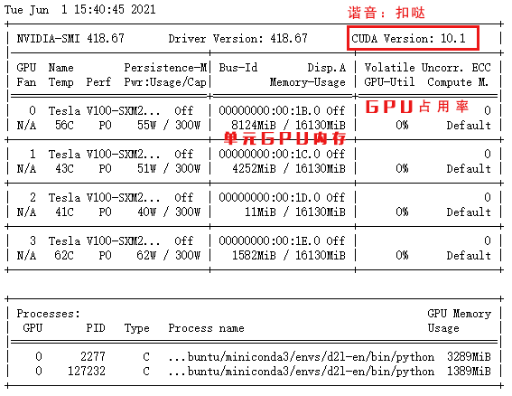
如果GPU利用率低于50%，可能是模型不优
以下假设有3块GPU可用，即编号0/1/2
计算设备默认使用CPU，如需使用GPU计算，需要手动指定
1 2 3 4 5 6 7 8 9 10 import torchfrom torch import nntorch.device('cpu' ), torch.cuda.device('cuda' ), torch.cuda.device('cuda:1' ) Out: (device(type='cpu' ), <torch.cuda.device at 0x7f723468cdc0 >, <torch.cuda.device at 0x7f7234655310 >)
查询可用gpu的数量
1 2 3 4 torch.cuda.device_count() Out: 2
cuda常见用法：
1 2 3 4 5 6 7 8 torch.cuda.is_available() torch.cuda.device_count() torch.cuda.get_device_capability(device) torch.cuda.get_device_name(device) torch.cuda.empty_cache() torch.cuda.manual_seed(seed) torch.cuda.manual_seed_all(seed) torch.cuda.get_device_properties(i)
这两个函数允许我们在请求的GPU不存在的情况下运行代码
1 2 3 4 5 6 7 8 9 10 11 12 13 14 15 16 17 18 def try_gpu (i=0 ): """如果存在，则返回gpu(i)，否则返回cpu()。""" if torch.cuda.device_count() >= i + 1 : return torch.device(f'cuda:{i} ' ) return torch.device('cpu' ) def try_all_gpus (): """返回所有可用的GPU，如果没有GPU，则返回[cpu(),]。""" devices = [ torch.device(f'cuda:{i} ' ) for i in range(torch.cuda.device_count())] return devices if devices else [torch.device('cpu' )] try_gpu(), try_gpu(10 ), try_all_gpus() Out: (device(type='cuda' , index=0 ), device(type='cpu' ), [device(type='cuda' , index=0 ), device(type='cuda' , index=1 )])
查询张量所在的设备
1 2 3 4 5 x = torch.tensor([1 , 2 , 3 ]) x.device Out: device(type='cpu' )
存储在GPU上
1 2 3 4 5 6 X = torch.ones(2 , 3 , device=try_gpu()) X Out: tensor([[1. , 1. , 1. ], [1. , 1. , 1. ]], device='cuda:0' )
第二个GPU上创建一个随机张量
1 2 3 4 5 6 Y = torch.rand(2 , 3 , device=try_gpu(1 )) Y Out: tensor([[0.9333 , 0.8735 , 0.7784 ], [0.3453 , 0.5509 , 0.3475 ]], device='cuda:1' )
要计算X + Y，我们需要决定在哪里执行这个操作
1 2 3 4 5 6 7 8 9 Z = X.cuda(1 ) print(X) print(Z) Out: tensor([[1. , 1. , 1. ], [1. , 1. , 1. ]], device='cuda:0' ) tensor([[1. , 1. , 1. ], [1. , 1. , 1. ]], device='cuda:1' )
现在数据在同一个GPU上（Z和Y都在），我们可以将它们相加 【必要条件】
1 2 3 4 5 6 7 8 9 10 Y + Z Out: tensor([[1.9333 , 1.8735 , 1.7784 ], [1.3453 , 1.5509 , 1.3475 ]], device='cuda:1' ) Z.cuda(1 ) is Z Out: True
神经网络与GPU 1 2 3 4 5 6 7 8 9 10 net = nn.Sequential(nn.Linear(3 , 1 )) net = net.to(device=try_gpu()) net(X) Out: net = nn.Sequential(nn.Linear(3 , 1 )) net = net.to(device=try_gpu()) net(X)
确认模型参数存储在同一个GPU上
1 2 3 4 net[0 ].weight.data.device Out: device(type='cuda' , index=0 )
Mac设备可以尝试 X = torch.ones(2,3,device = torch.device('mps'))
GPU购买
7、GPU：Q&A 7.1 Little Problems 尽量在GPU上做运算 如果读入数据的时间 > GPU运算时间，一般使用CPU；相反，如果读入数据的时间 < GPU运算时间，一般使用GPU 7.2 device_count()为0 两个原因。一是可能cuda没装好；二是可能装的是CPU版本的pytorch，但需要GPU版本的
8、CUDA下载安装 CUDA安装及环境配置
GPU版PyTorch对应安装教程 【更优】
8.1 三个基本概念 算力 ：需要先知道你的显卡，之后根据官网表格进行对应，得到算力
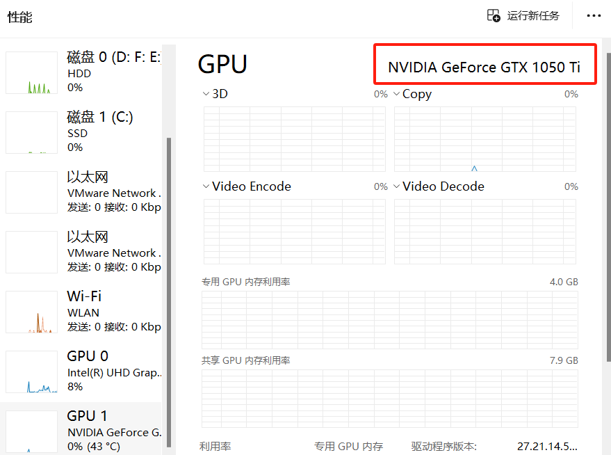
CUDA driver version：电脑上显卡的硬件驱动
CUDA runtime version：pytorch官网上所显示的CUDA版本号
8.2 操作 ② 确定CUDA版本所支持的算力 传送门：不同版本CUDA支持的算力
我这个是6.1 的算力，对应可以选择11.0 和11.1 – 11.4 的CUDA runtime version
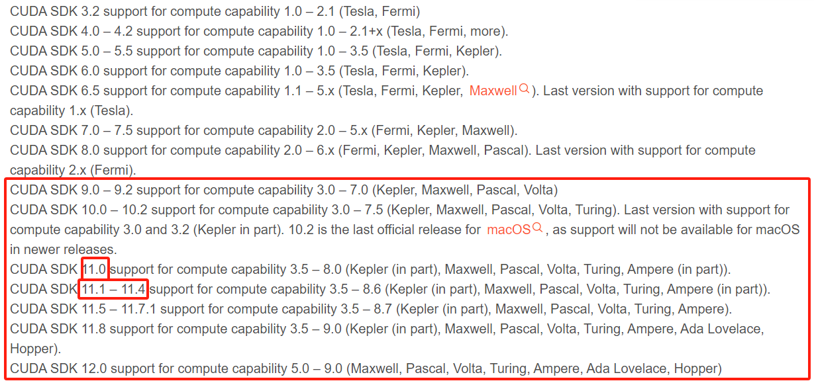
③ 查看自己的CUDA driver version 1 2 3 4 5 # 查看CUDA driver version nvidia-smi.exe # 查看已安装CUDA的版本 NVCC -V
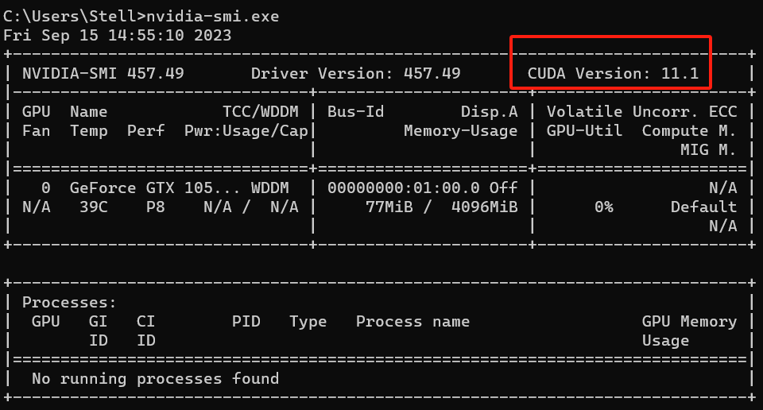
三者之间需要满足的关系：
最后选择下载了11.1版本的CUDA
④ 在线安装自己的GPU版本的pytorch CUDA runtime version版本11.1找点低点的torch版本，例如pytorch为v1.2.0版本，因为这里是Conda进行安装的，最终确定命令为：
1 conda install pytorch==1 .8 .0 torchvision==0 .9 .0 torchaudio==0 .8 .0 cudatoolkit=11 .1 -c pytorch -c conda-forge
这里的-c是下载通道含义，-c pytorch表示从pytorch官网下载，因为是外国的服务器，一般会很慢。我们可以看到这条命令其实是下载了三个库， pytorch==1.2.0 torchvision==0.4.0 cudatoolkit=10.0
⭐️备选方案一：在线下载
从清华源进行下载【pytorch和torchvision是一个地址，cudatoolkit 是另一个地址】
1 2 3 conda install pytorch==1 .8 .0 torchvision==0 .9 .0 -c https://mirrors.tuna.tsinghua.edu.cn/anaconda/cloud/pytorch/win-64 / conda install cudatoolkit=11 .1 -c https://mirrors.tuna.tsinghua.edu.cn/anaconda/pkgs/main/
可能遇到的报错问题：CondaHTTPError: HTTP 403 FORBIDDEN for url
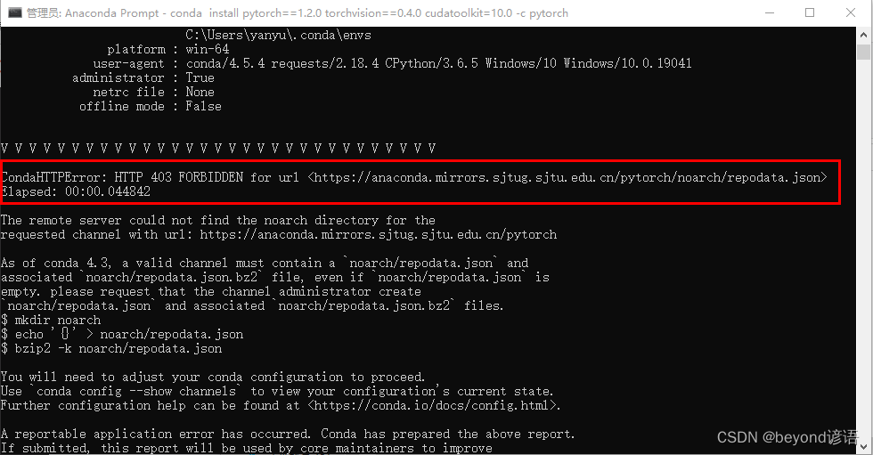
尝试解决方法
最好的办法就是早上搞，家人们，尤其是早上6点多，网速飞起！像这种下载超时错误，一般都能解决！
重置配置文件：conda config --remove-key channels。添加清华源：
1 2 3 4 conda config --add channels https://mi rrors.tuna.tsinghua.edu.cn/anaconda/ pkgs/free/ conda config --add channels https://mi rrors.tuna.tsinghua.edu.cn/anaconda/ pkgs/main/ conda config --add channels https://mi rrors.tuna.tsinghua.edu.cn/anaconda/ cloud/pytorch/ conda config --set show_channel_urls yes
之后再次运行即可，也可参考博文：Anaconda中下载速度贼慢？
⭐️备选方案二：本地安装PyTroch
若在线安装老是出问题多半是服务器响应超时，那就直接本地下载安装得了。例如，通过torch官网找到的命令为：
1 conda install pytorch==1 .8 .0 torchvision==0 .9 .0 torchaudio==0 .8 .0 cudatoolkit=11 .1 -c pytorch -c conda-forge
下载链接传送门
cu111：CUDA11.1 cp38：python3.8版本 需要根直接的python版本号一致 找到对应的windows64位进行下载即可，python版本按实际情况进行下载即可
下载完成之后，在环境空间下输入下面的命令进行本地安装
1 2 3 4 5 # 安装torch-1 .2 .0 pip install D:\desktop\torch-1 .2 .0 -cp36-cp36m-win_amd64.whl # 再安装torchvision0.4 .0 pip install D:\desktop\torchvision-0 .4 .0 -cp36-cp36m-win_amd64.whl
8.3 验证 环境空间下依次输入以下命令
1 2 3 python import torchtorch.cuda.is_available()
若返回True表示安装GPU版本成功；quit()或Ctrl+Z退出编辑器
8.4 额外操作 8.4.1 确定CUDA版本支持的VS版本 查询官方安装文档，这里给出文档地址 ，可知，支持的VS版本如下表：
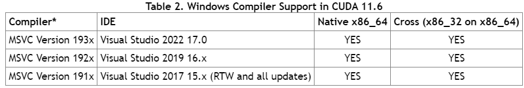
8.4.2 确定CUDA版本对应的cuDNN版本 在CUDNN下载页面 ，我的cuda是11.1，这里就选择cuDNN版本的for CUDA11.1版本即可
三个安装版本都确定好了，安装的顺序是先安装vs2019、CUDA11.1、然后是cuDNNV10.0【如果 你安装的是别的版本，注意它们之间的版本对应就行，套路是一样的】
8.4.3 测试CUDA 以下是在 D:\Software\NVIDIA-CUDA\extras\demo_suite 文件夹下的测试Demo
查询一下本机的GPU设备：deviceQuery 测试带宽： bandwidthTest 结果都是PASS，说明一切运行正常 8.4.4 安装CUDNN 下载安装包，在NVIDIA官方网站即可下载，地址传送门 【如果没有NVIDIA开发者账号的话，需要按照提示注册一个，再登录即可下载】
下载之后直接解压缩，完成后点击去你能看到如下三个文件夹
把这三个文件夹的文件分别拷贝到CUDA安装目录对应的【bin、include、lib】文件夹中即可。CUDA的lib目录有x64 、Win32、cmake三个文件夹，拷到其中的x64这个文件夹中
二、卷积层 1 从全连接到卷积
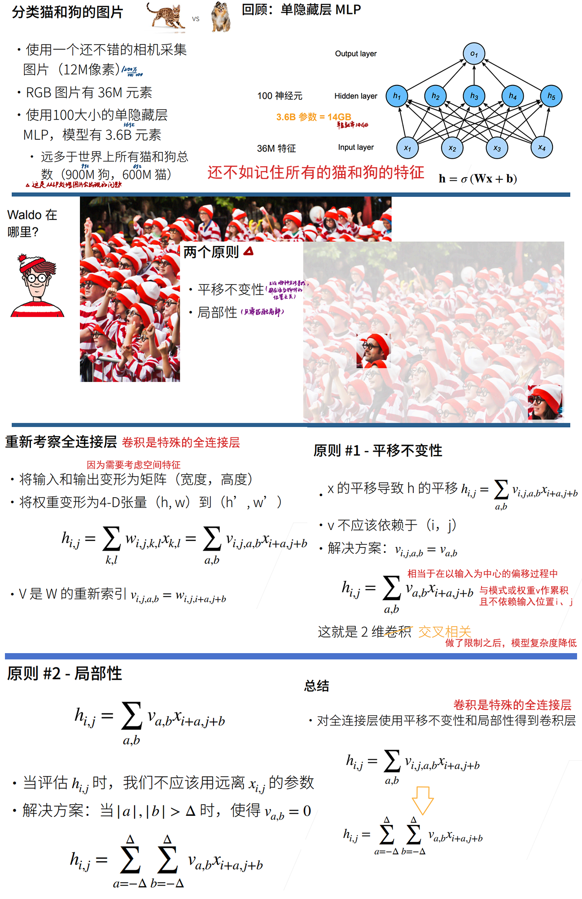
2 卷积层
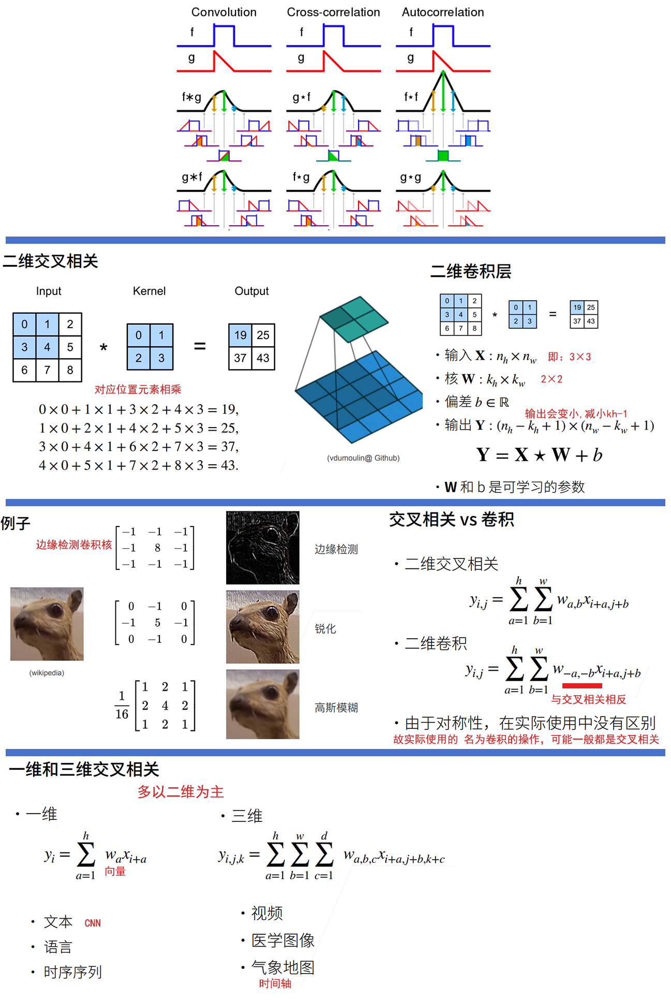
总结
卷积层将输入和核矩阵进行交叉相关，加上偏移后得到输出。这种方法大大减少了参数量。 核矩阵和偏移是可以学习的参数 核矩阵的大小是超参数 卷积会减小输出，应对办法很多，其中一个就是在图像外圈加一圈0 3 图像卷积 互相关运算
1 2 3 4 5 6 7 8 9 10 11 12 13 14 15 16 17 18 19 20 21 22 23 24 import torchfrom torch import nnfrom d2l import torch as d2ldef corr2d (X, K ): """计算二维互相关运算。 Y：目标矩阵 | K：卷积核 """ h, w = K.shape Y = torch.zeros((X.shape[0 ] - h + 1 , X.shape[1 ] - w + 1 )) for i in range(Y.shape[0 ]): for j in range(Y.shape[1 ]): Y[i, j] = (X[i:i + h, j:j + w] * K).sum() return Y X = torch.tensor([[0.0 , 1.0 , 2.0 ], [3.0 , 4.0 , 5.0 ], [6.0 , 7.0 , 8.0 ]]) K = torch.tensor([[0.0 , 1.0 ], [2.0 , 3.0 ]]) corr2d(X, K) Out: tensor([[19. , 25. ], [37. , 43. ]])
实现二维卷积层
1 2 3 4 5 6 7 8 9 class Conv2D (nn.Module ): def __init__ (self, kernel_size ): super().__init__() self.weight = nn.Parameter(torch.rand(kernel_size)) self.bias = nn.Parameter(torch.zeros(1 )) def forward (self, x ): return corr2d(x, self.weight) + self.bias
卷积层的一个简单应用： 检测图像中不同颜色的边缘
1 2 3 4 5 6 7 8 9 10 11 12 X = torch.ones((6 , 8 )) X[:, 2 :6 ] = 0 K = torch.tensor([[1.0 , -1.0 ]]) print(X) Out: tensor([[1. , 1. , 0. , 0. , 0. , 0. , 1. , 1. ], [1. , 1. , 0. , 0. , 0. , 0. , 1. , 1. ], [1. , 1. , 0. , 0. , 0. , 0. , 1. , 1. ], [1. , 1. , 0. , 0. , 0. , 0. , 1. , 1. ], [1. , 1. , 0. , 0. , 0. , 0. , 1. , 1. ], [1. , 1. , 0. , 0. , 0. , 0. , 1. , 1. ]])
该图像（矩阵）存在明显的边缘
1×2的卷积核[1.0, -1.0]：假设两个元素没有变，即没有边缘，输出为0；假设两个元素为[1, 0]或[0, 1]，那么输出为1或-1。
输出Y中的1代表从白色到黑色的边缘，-1代表从黑色到白色的边缘
1 2 3 4 5 6 7 8 9 Y = corr2d(X, K) Out： tensor([[ 0. , 1. , 0. , 0. , 0. , -1. , 0. ], [ 0. , 1. , 0. , 0. , 0. , -1. , 0. ], [ 0. , 1. , 0. , 0. , 0. , -1. , 0. ], [ 0. , 1. , 0. , 0. , 0. , -1. , 0. ], [ 0. , 1. , 0. , 0. , 0. , -1. , 0. ], [ 0. , 1. , 0. , 0. , 0. , -1. , 0. ]])
卷积核K只可以检测垂直边缘
1 2 3 4 5 6 7 8 9 10 11 print(corr2d(X.t(), K)) Out： tensor([[0. , 0. , 0. , 0. , 0. ], [0. , 0. , 0. , 0. , 0. ], [0. , 0. , 0. , 0. , 0. ], [0. , 0. , 0. , 0. , 0. ], [0. , 0. , 0. , 0. , 0. ], [0. , 0. , 0. , 0. , 0. ], [0. , 0. , 0. , 0. , 0. ], [0. , 0. , 0. , 0. , 0. ]])
学习 由X生成Y的卷积核K
1 2 3 4 5 6 7 8 9 10 11 12 13 14 15 16 17 18 19 20 21 22 23 24 25 conv2d = nn.Conv2d(1 , 1 , kernel_size=(1 , 2 ), bias=False ) X = X.reshape((1 , 1 , 6 , 8 )) Y = Y.reshape((1 , 1 , 6 , 7 )) for i in range(10 ): Y_hat = conv2d(X) l = (Y_hat - Y)**2 conv2d.zero_grad() l.sum().backward() conv2d.weight.data[:] -= 3e-2 * conv2d.weight.grad if (i + 1 ) % 2 == 0 : print(f'batch {i+1 } , loss {l.sum():.3 f} ' ) Out: batch 2 , loss 2.635 batch 4 , loss 0.445 batch 6 , loss 0.076 batch 8 , loss 0.013 batch 10 , loss 0.002
所学的卷积核的权重张量
1 2 3 4 5 targetW = conv2d.weight.data.reshape((1 , 2 )) print(targetW) Out: tensor([[ 1.0109 , -0.9764 ]])
4 Q&A 4.1 Little Questions 做 权重变形 和 重新索引 是为了解释为什么卷积是特殊的全连接层
为什么不应该看的很远，感受野不应该越大越好吗？即卷积核大小越大越好吗？
这个问题很类似于，为什么全连接层不是一个很宽很浅的隐藏层，而是一般为很深很窄的全连接层。同样，卷积层也一样，大卷积核的效果不如小卷积核【一般用3×3，最多用5×5】
一个设计思路：同时使用两个不同尺寸的Kernel进行计算，然后再计算出一个更合适的Kernel，从而提高特征提取的性能
卷积，起源于信号处理，公式里的负号来源于傅里叶变换
卷积核的不变，体现了平移不变性；卷积核大小，体现了局部性
竞赛问题：迭代多次形成的Loss变化图抖动厉害，原因？
数据多样性大，这样的抖动很正常【可以做平滑处理，或者增大批量大小】，抖动没关系，但光抖不下降是有问题的 学习率过大导致 4.2 卷积概念的补充 从“卷积”、到“图像卷积操作”、再到“卷积神经网络”，“卷积”意义的3次改变 ：求解不断吃饭和消化之后的存量问题，该问题可以用来理解卷积公式。套入另一个例子可以用来理解对图片的卷积操作：求解蝴蝶扇动翅膀的影响力和影响力随时间衰退后的剩余影响力问题
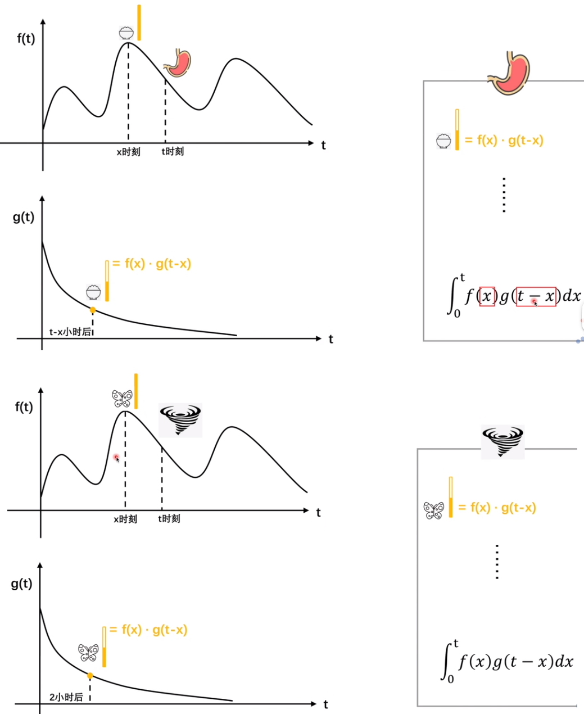
两个函数中的自变量相加可消除x，这是卷积的典型标志
拓展对到第二个例子来理解，图片的每个局部区域像素，与卷积核相乘再求和，可以理解为影响力大小，即原区域与卷积核是怎样产生影响的，而 g 函数规定了如何影响
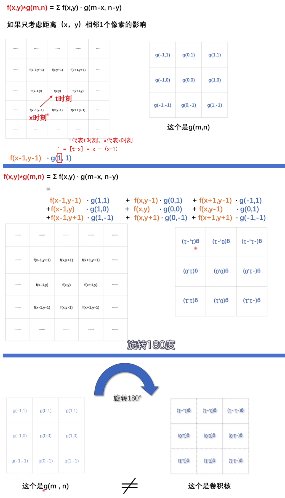
3×3的卷积核，元素均为1/9，本质上是将9个像素点相加求平均，会让图像变得平滑、朦胧，称为平滑卷积 操作。也可这样理解，如果该像素值与平均值相比较过大，那就拉低；过小，那就拉高。也就是说，间接规定了周围的像素点是如何对当前像素点产生影响的，而卷积核用来处理周围像素点和当前像素点的关系。
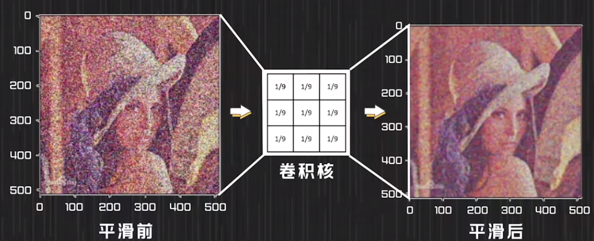
这类卷积核，也可以用于过滤像素，提取特征，也被称为过滤器。进行拟人化理解，就是说对周围像素点的主动试探和选择，即通过卷积核把周围有用的特征保留。
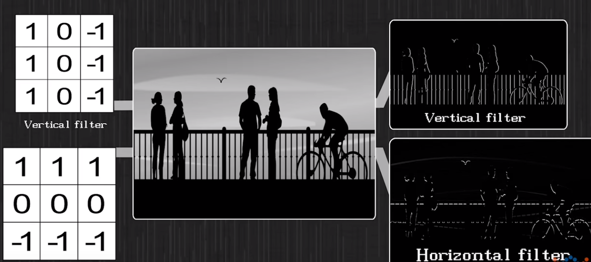
现在再理解卷积神经网络 ，其是用来做图像识别的。具体来说，是专门用于识别非规整的情况，如下【以下先简化问题，只针对黑白图片，1/-1】：
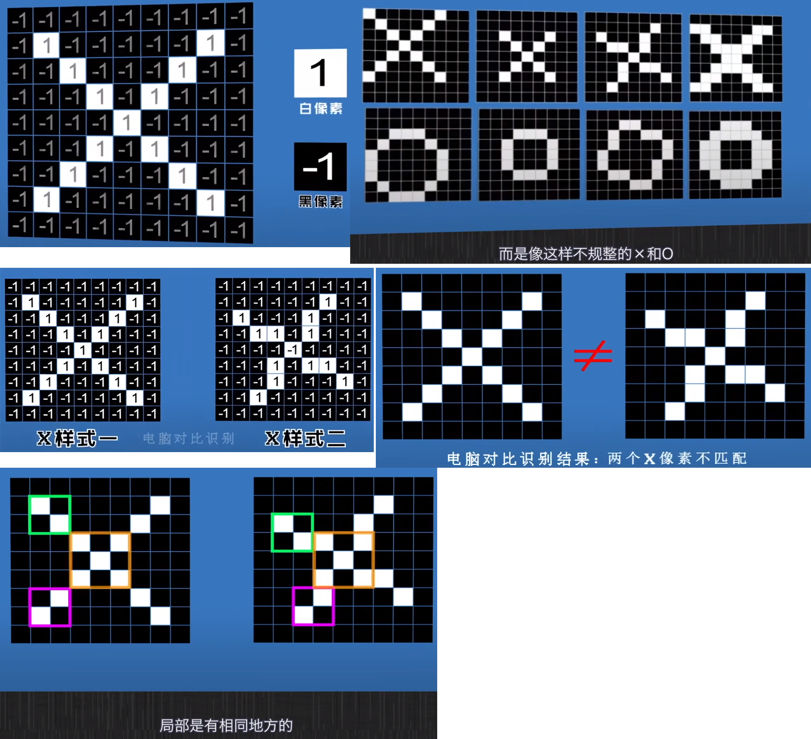
以此为基础，利用卷积神经网络对图像识别的过程大概是
使用特定卷积核，提取特征 使用神经网络进行识别度计算
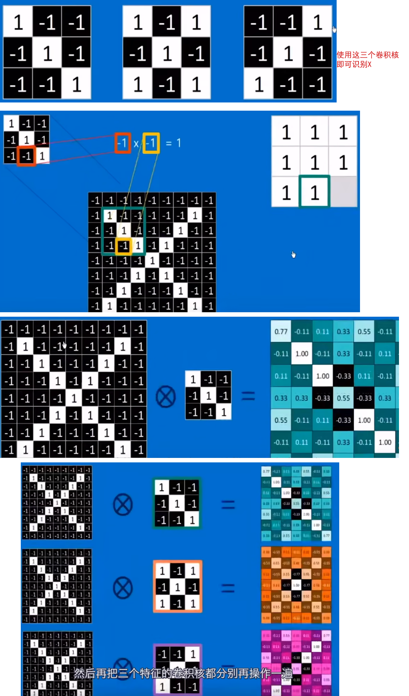
小结：卷积的三层含义 不稳定输入和稳定输出，求系统存量 【图像处理】卷积核规定了周围像素点对当前像素点如何产生影响 【过滤器】一个像素点如何试探周围像素点，如何筛选不同特征 三、卷积层里的填充和步幅 1 填充和步幅
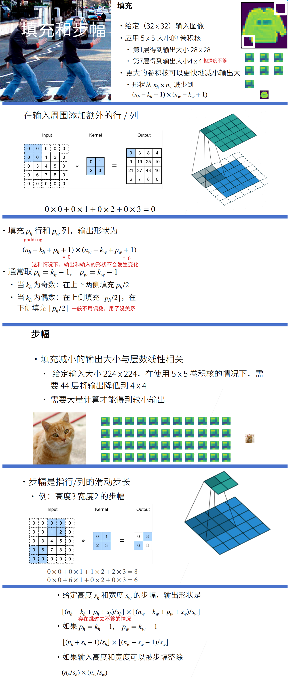
总结
填充和步幅是卷积层的超参数 填充是在输入周围添加额外的行和列，来控制输出形状的减少量 步幅是每次滑动核窗口时的行和列的步长，可以成倍的减少输出的形状，从而控制计算量 2 代码实现 ① 在所有侧边填充1个像素
1 2 3 4 5 6 7 8 9 10 11 12 13 14 15 16 17 18 19 20 import torchfrom torch import nndef comp_conv2d (conv2d, X ): X = X.reshape((1 , 1 ) + X.shape) Y = conv2d(X) return Y.reshape(Y.shape[2 :]) conv2d = nn.Conv2d(1 , 1 , kernel_size=3 , padding=1 ) X = torch.rand(size=(8 , 8 )) print(comp_conv2d(conv2d, X).shape) print((1 ,1 ) + (8 ,8 ), type((8 ,8 ))) Out: torch.Size([8 , 8 ]) (1 , 1 , 8 , 8 ) <class 'tuple '>
② 填充不同的高度和宽度
1 2 3 4 5 conv2d = nn.Conv2d(1 , 1 , kernel_size=(5 , 3 ), padding=(2 , 1 )) comp_conv2d(conv2d, X).shape Out: torch.Size([8 , 8 ])
③ 将高度和宽度的步幅设置为2
1 2 3 4 5 conv2d = nn.Conv2d(1 , 1 , kernel_size=3 , padding=1 , stride=2 ) print(comp_conv2d(conv2d, X).shape) Out: torch.Size([4 , 4 ])
④ 一个稍微复杂的例子
1 2 3 4 5 conv2d = nn.Conv2d(1 , 1 , kernel_size=(3 , 5 ), padding=(0 , 1 ), stride=(3 , 4 )) comp_conv2d(conv2d, X).shape Out: torch.Size([2 , 2 ])
3 Q&A 3.1 Little Questions 卷积核一般取奇数，是因为填充一般取【核 - 1】，这样上下填充一致。 步幅、填充、通道数、核大小，都是神经网络架构的一部分。其数值并不怎么调节，是因为比如ResNet等模型会去固定取值。 实际解决问题的过程中都会用经典的神经网络，一般不会自己去设计卷积核，也不会去自己设计或手写神经网络 。除非你的输入很特别的情况，如 20×1000 这种很特别的输入。【总之，网络结果在很多情况下，并没有那么关键】 NAS【网络结构搜索】：让超参数一起参加训练，属于自动机器学习的一块，很类似于寻找最优路径参数。【适应度有限，可能没必要。但适用于特殊硬件使用如使用手机去跑模型、特殊输入、特殊问题】【包括autogluon，不建议，这是烧钱的有钱人游戏，没必要，未来可能会便宜。】 多层卷积之后，特征会丢失吗？会丢失，机器学习的本质其实是一个极端压缩算法，给你很多特征，最后压缩为一个语意标号。 自动训练参数可能会带来过拟合的问题，如果验证集设置的不错，过拟合可以很好的避免。 多层 3×3 卷积 从效果上可以等价为 一些 5×5 卷积，但是 3×3 卷积会快一点，更便宜一点【这是GoogleNet的设计思路】 底层用大Kernel，上层用小Kernel，还是用同样的Kernel？主流的做法是，底层用相对来说大一点的 Kernel，之后还是会用 3×3，理由是简单、易控。但其实，最后的最后，被记住依然是最简单的模型。 3.2 这几个超参数的重要程度？ 【核大小最重要 | 填充 | 步幅】
填充：会使得输入与输出大小一样，一般取【核 - 1】，如例子②中取了【核 - 1】并除以2（两侧），这样计算也比较方便。 步幅：通常取1。除非觉得计算量太大，为了快速减小计算量，通常会取2【如将这样的步幅为2的层，均匀地插在神经网络的中间】。 四、卷积层里的多输入多输出通道 1 多输入输出通道
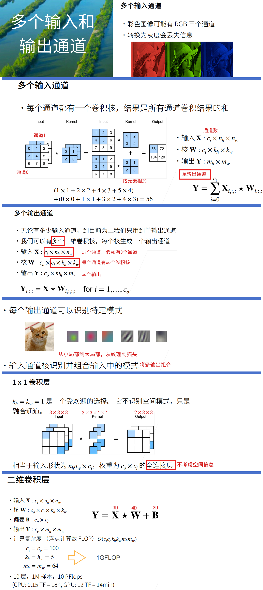
总结
输出通道数是卷积层的超参数，输入通道数是上一层的超参数。 每个输入通道有独立的二维卷积核，所有通道结果相加得到一个输出通道结果 每个输出通道有独立的三维卷积核 【注意】卷积后的高宽计算公式：
原宽 - 卷积核宽 + padding × 2 + (stride = 1)( 原宽 - 卷积核宽 + padding × 2 + stride ) / stride2 代码实现 实现一下多输入通道互相关运算
1 2 3 4 5 6 7 8 import torchfrom d2l import torch as d2ldef corr2d_multi_in (X, K ): return sum(d2l.corr2d(x, k) for x, k in zip(X, K))
验证互相关运算的输出
1 2 3 4 5 6 7 8 9 10 11 12 X = torch.tensor([[[0.0 , 1.0 , 2.0 ], [3.0 , 4.0 , 5.0 ], [6.0 , 7.0 , 8.0 ]], [[1.0 , 2.0 , 3.0 ], [4.0 , 5.0 , 6.0 ], [7.0 , 8.0 , 9.0 ]]]) K = torch.tensor([[[0.0 , 1.0 ], [2.0 , 3.0 ]], [[1.0 , 2.0 ], [3.0 , 4.0 ]]]) corr2d_multi_in(X, K) Out: tensor([[ 56. , 72. ], [104. , 120. ]])
计算多个通道的输出的互相关函数
1 2 3 4 5 6 7 8 9 10 11 12 13 14 15 16 17 18 19 def corr2d_multi_in_out (X, K ): return torch.stack([corr2d_multi_in(X, k) for k in K], 0 ) K = torch.stack((K, K + 1 , K + 2 ), 0 ) print(K.shape) print(corr2d_multi_in_out(X, K)) Out: torch.Size([3 , 2 , 2 , 2 ]) tensor([[[ 56. , 72. ], [104. , 120. ]], [[ 76. , 100. ], [148. , 172. ]], [[ 96. , 128. ], [192. , 224. ]]])
1x1卷积【用全连接来实现】
1 2 3 4 5 6 7 8 9 10 11 12 13 14 15 16 17 def corr2d_multi_in_out_1x1 (X, K ): print(X.shape, K.shape) c_i, h, w = X.shape c_o = K.shape[0 ] X = X.reshape((c_i, h * w)) K = K.reshape((c_o, c_i)) Y = torch.matmul(K, X) return Y.reshape((c_o, h, w)) X = torch.normal(0 , 1 , (3 , 3 , 3 )) K = torch.normal(0 , 1 , (2 , 3 , 1 , 1 )) Y1 = corr2d_multi_in_out_1x1(X, K) Y2 = corr2d_multi_in_out(X, K) assert float(torch.abs(Y1 - Y2).sum()) < 1e-6
3 Q&A 3.1 Little Questions 一般来讲，如果输入的高宽如果减半，会将通道数加倍【即空间信息压缩之后，将提取的信息在更多的通道上存下来】 网络越深，Padding-0越多，基本不会影响性能【计算性能：基本不影响，除非Padding很多0 | 模型性能：加入很多0不会有太多影响，0加入卷积后变成一个常数，变成了偏差值，可以完全忽略】 每个通道的卷积核是不一样的，不同通道卷积核大小 是一样的【计算方便】 Bias偏移，有用，但未来的作用会越来越低。一般偏移会等价于数据均值的负数，当然由于我们做了很多均匀化的操作，所以实际上偏移没有那么大的影响。 本节课只讲到二维卷积 ，只有高宽两个。如果多一个深度的维度，需要用到3D卷积，这样的情况下，输入会是一个4D【通道数×深度×高×宽】，卷积核是一个5D张量【多输出个数×通道数×深度×高×宽】，输出也会是一个4D张量 卷积网络处理图片的过程中，一般不会考虑高频和低频的说法【信号处理中的概念】 MobileNets ，一组移动端优先的计算机视觉模型，此模型使用深度可分离卷积 来构建轻量级深度神经网络。通过TensorFlow Mobile，这些模型可以在脱机状态下在移动设备上高效运行。显著优势是在手机端运行速度很快，计算复杂度非常低【MobileNet使用3x3深度可分离卷积，可在只需减少略小的准确率换来8-9 倍的计算量的减少】，效果也很不错。思路是：使用3×3的深度卷积和多个1×1卷积。卷积也能获得位置信息，而且对位置很敏感，甚至之后会讲到使用池化层去使得卷积对位置信息不那么敏感。 卷积的每个通道，不共享参数。 我们期望卷积能检测图像纹理信息，但是实际上卷积核是自己通过数据学习出来的。所以，你无法控制它到底能识别谁，也不能确定需要多少次。 输入通道不能动态变化。 RGB+视频可以使用3D卷积处理【效果好一点点，但计算量高很多】 五、池化层 1 池化层
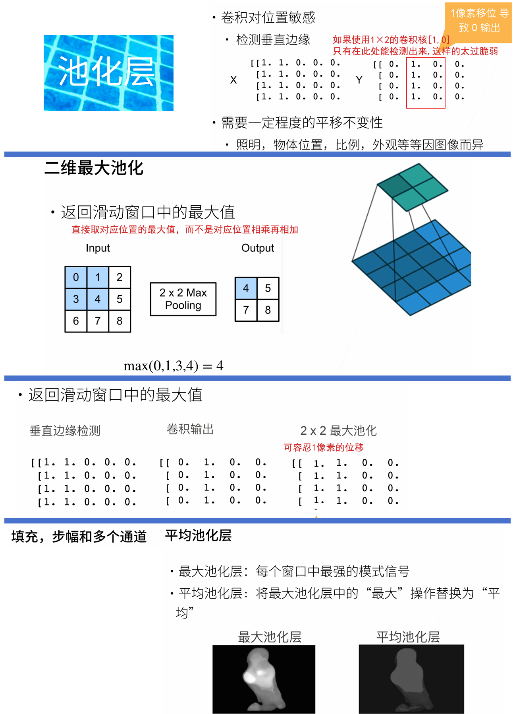
总结
池化层与卷积层类似，都具有填充和步幅，但池化层没有可学习的参数 在每个输入通道作用池化层，以获得相应的输出通道，即不做通道融合，不改变通道数，输出通道数 = 输入通道数 池化层返回窗口的最大值或者平均值，来缓解卷积层对位置的敏感度 2 代码实现 实现池化层的正向传播
1 2 3 4 5 6 7 8 9 10 11 12 13 14 import torchfrom torch import nnfrom d2l import torch as d2ldef pool2d (X, pool_size, mode='max' ): p_h, p_w = pool_size Y = torch.zeros((X.shape[0 ] - p_h + 1 , X.shape[1 ] - p_w + 1 )) for i in range(Y.shape[0 ]): for j in range(Y.shape[1 ]): if mode == 'max' : Y[i, j] = X[i:i + p_h, j:j + p_w].max() elif mode == 'avg' : Y[i, j] = X[i:i + p_h, j:j + p_w].mean() return Y
验证二维最大池化层的输出
1 2 3 4 5 6 X = torch.tensor([[0.0 , 1.0 , 2.0 ], [3.0 , 4.0 , 5.0 ], [6.0 , 7.0 , 8.0 ]]) pool2d(X, (2 , 2 )) Out: tensor([[4. , 5. ], [7. , 8. ]])
验证平均池化层
1 2 3 4 5 pool2d(X, (2 , 2 ), 'avg' ) Out: tensor([[2. , 3. ], [5. , 6. ]])
填充和步幅
1 2 3 4 5 6 7 8 X = torch.arange(16 , dtype=torch.float32).reshape((1 , 1 , 4 , 4 )) X Out: tensor([[[[ 0. , 1. , 2. , 3. ], [ 4. , 5. , 6. , 7. ], [ 8. , 9. , 10. , 11. ], [12. , 13. , 14. , 15. ]]]])
深度学习框架中的步幅与池化窗口的大小相同
1 2 3 4 5 pool2d = nn.MaxPool2d(3 ) pool2d(X) Out: tensor([[[[10. ]]]])
填充和步幅可以手动设定
1 2 3 4 5 6 pool2d = nn.MaxPool2d(3 , padding=1 , stride=2 ) pool2d(X) Out: tensor([[[[ 5. , 7. ], [13. , 15. ]]]])
设定一个任意大小的矩形池化窗口，并分别设定填充和步幅的高度和宽度
1 2 3 4 5 6 7 pool2d = nn.MaxPool2d((2 , 3 ), padding=(1 , 1 ), stride=(2 , 3 )) pool2d(X) Out: tensor([[[[ 1. , 3. ], [ 9. , 11. ], [13. , 15. ]]]])
池化层在每个输入通道上单独运算
1 2 3 4 5 6 7 8 9 10 11 12 13 14 15 16 17 18 19 20 21 22 23 X = torch.cat((X, X + 1 ), 1 ) X Out: tensor([[[[ 0. , 1. , 2. , 3. ], [ 4. , 5. , 6. , 7. ], [ 8. , 9. , 10. , 11. ], [12. , 13. , 14. , 15. ]], [[ 1. , 2. , 3. , 4. ], [ 5. , 6. , 7. , 8. ], [ 9. , 10. , 11. , 12. ], [13. , 14. , 15. , 16. ]]]]) pool2d = nn.MaxPool2d(3 , padding=1 , stride=2 ) pool2d(X) Out: tensor([[[[ 5. , 7. ], [13. , 15. ]], [[ 6. , 8. ], [14. , 16. ]]]])
3 Q&A 3.1 Little Questions 一般池化层是放在卷积后面 池化层，一般不做窗口重叠，但没有证据证明这样做效果会好【尽管现在使用池化层的频率越来越少，因为池化层有两个作用，一个是减弱位置信息对卷积层的影响，一个是减小计算量。后者也可以用卷积层实现；对于前者，本身就会对数据进行增强，做旋转、位移等等，基本不会使得其过拟合到某一个位置】 六、经典卷积神经网络 LeNet 1 LeNet
总结 ：LeNet是早期成功的神经网络。其先使用卷积层来学习图片空间信息，然后使用全连接层来转换到类别空间【现在不流行，原论文中的很多都还没有实现】
2 代码实现 LeNet（LeNet-5）由两个部分组成： 卷积编码器和全连接层密集块
1 2 3 4 5 6 7 8 9 10 11 12 13 14 15 16 17 18 19 import torchfrom torch import nnfrom d2l import torch as d2lclass Reshape (torch.nn.Module ): def forward (self, x ): return x.view(-1 , 1 , 28 , 28 ) net = torch.nn.Sequential( Reshape(), nn.Conv2d(1 , 6 , kernel_size=5 ,padding=2 ), nn.Sigmoid(), nn.AvgPool2d(kernel_size=2 , stride=2 ), nn.Conv2d(6 , 16 , kernel_size=5 ), nn.Sigmoid(), nn.AvgPool2d(kernel_size=2 , stride=2 ), nn.Flatten(), nn.Linear(16 * 5 * 5 , 120 ), nn.Sigmoid(),nn.Linear(120 , 84 ), nn.Sigmoid(), nn.Linear(84 , 10 ))
检查模型【Pytoch 有一个summarize的函数，功能同下】
【卷积就是把数据大小不断变小，通道不断变多，通道可以认为是一个空间的模式pattern。这样能把不断压缩的信息放到不同的通道里，然后通过MLP模型训练出一个理想输出】
1 2 3 4 5 6 7 8 9 10 11 12 13 14 15 16 17 18 19 X = torch.rand(size=(1 , 1 , 28 , 28 ), dtype=torch.float32) for layer in net: X = layer(X) print(layer.__class__.__name__, 'output shape: \t' , X.shape) Out: Reshape output shape: torch.Size([1 , 1 , 28 , 28 ]) Conv2d output shape: torch.Size([1 , 6 , 28 , 28 ]) Sigmoid output shape: torch.Size([1 , 6 , 28 , 28 ]) AvgPool2d output shape: torch.Size([1 , 6 , 14 , 14 ]) Conv2d output shape: torch.Size([1 , 16 , 10 , 10 ]) Sigmoid output shape: torch.Size([1 , 16 , 10 , 10 ]) AvgPool2d output shape: torch.Size([1 , 16 , 5 , 5 ]) Flatten output shape: torch.Size([1 , 400 ]) Linear output shape: torch.Size([1 , 120 ]) Sigmoid output shape: torch.Size([1 , 120 ]) Linear output shape: torch.Size([1 , 84 ]) Sigmoid output shape: torch.Size([1 , 84 ]) Linear output shape: torch.Size([1 , 10 ])
LeNet在Fashion-MNIST数据集上的表现【这个数据集难一点】
1 2 batch_size = 256 train_iter, test_iter = d2l.load_data_fashion_mnist(batch_size=batch_size)
对 evaluate_accuracy函数进行轻微的修改
1 2 3 4 5 6 7 8 9 10 11 12 13 14 15 def evaluate_accuracy_gpu (net, data_iter, device=None ): """使用GPU计算模型在数据集上的精度。""" if isinstance(net, torch.nn.Module): net.eval() if not device: device = next(iter(net.parameters())).device metric = d2l.Accumulator(2 ) for X, y in data_iter: if isinstance(X, list): X = [x.to(device) for x in X] else : X = X.to(device) y = y.to(device) metric.add(d2l.accuracy(net(X), y), y.numel()) return metric[0 ] / metric[1 ]
为了使用 GPU，我们还需要一点小改动
1 2 3 4 5 6 7 8 9 10 11 12 13 14 15 16 17 18 19 20 21 22 23 24 25 26 27 28 29 30 31 32 33 34 35 36 37 38 39 def train_ch6 (net, train_iter, test_iter, num_epochs, lr, device ): """用GPU训练模型(在第六章定义)。""" def init_weights (m ): if type(m) == nn.Linear or type(m) == nn.Conv2d: nn.init.xavier_uniform_(m.weight) net.apply(init_weights) print('training on' , device) net.to(device) optimizer = torch.optim.SGD(net.parameters(), lr=lr) loss = nn.CrossEntropyLoss() animator = d2l.Animator(xlabel='epoch' , xlim=[1 , num_epochs], legend=['train loss' , 'train acc' , 'test acc' ]) timer, num_batches = d2l.Timer(), len(train_iter) for epoch in range(num_epochs): metric = d2l.Accumulator(3 ) net.train() for i, (X, y) in enumerate(train_iter): timer.start() optimizer.zero_grad() X, y = X.to(device), y.to(device) y_hat = net(X) l = loss(y_hat, y) l.backward() optimizer.step() with torch.no_grad(): metric.add(l * X.shape[0 ], d2l.accuracy(y_hat, y), X.shape[0 ]) timer.stop() train_l = metric[0 ] / metric[2 ] train_acc = metric[1 ] / metric[2 ] if (i + 1 ) % (num_batches // 5 ) == 0 or i == num_batches - 1 : animator.add(epoch + (i + 1 ) / num_batches, (train_l, train_acc, None )) test_acc = evaluate_accuracy_gpu(net, test_iter) animator.add(epoch + 1 , (None , None , test_acc)) print(f'loss {train_l:.3 f} , train acc {train_acc:.3 f} , ' f'test acc {test_acc:.3 f} ' ) print(f'{metric[2 ] * num_epochs / timer.sum():.1 f} examples/sec ' f'on {str(device)} ' )
训练和评估LeNet-5模型
1 2 3 4 5 6 lr, num_epochs = 0.9 , 10 train_ch6(net, train_iter, test_iter, num_epochs, lr, d2l.try_gpu()) Out: loss 0.453 , train acc 0.832 , test acc 0.817 71848.6 examples/sec on cuda:0
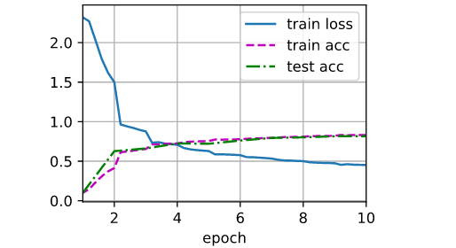
卷积【LeNet】是受限的全连接，意味着模型相对于MLP会小很多，几乎没有Overfitting
3 Q&A 3.1 Little Questions 卷积可以做图像、时序【如文本】 LeNet中通道变大，一般情况下，当图像高宽【每一个高宽的像素，都是对特定模式的识别，即同一个卷积核，使得用1个像素表示原来4或9个像素的值】减半，会将通道数【增加了一组参数】翻倍，整体上的数据量还是一个减小的过程 如何选择深度学习模型？数据量小，可以用MLP，速度快；但数据量大，参数量大的时候，用不了MLP 卷积可视化：CNN-explainer 七、经典卷积神经网络 AlexNet 2012年左右至今，AlexNet依然使用，变化看起来不大，但花费了将近20年的时间。
AlexNet是更大更深的LeNet，10x参数个数，260x计算复杂度 加入了丢弃法、最大池化、数据增强 AlexNet赢下2012年imageNet竞赛后，标志着神经网络热潮的开始 1 AlexNet
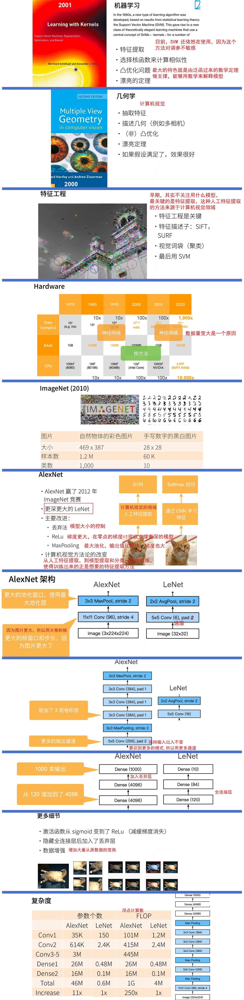
2 代码实现 深度卷积神经网络（AlexNet）
1 2 3 4 5 6 7 8 9 10 11 12 13 14 15 16 17 import torchfrom torch import nnfrom d2l import torch as d2lnet = nn.Sequential( nn.Conv2d(1 , 96 , kernel_size=11 , stride=4 , padding=1 ), nn.ReLU(), nn.MaxPool2d(kernel_size=3 , stride=2 ), nn.Conv2d(96 , 256 , kernel_size=5 , padding=2 ), nn.ReLU(), nn.MaxPool2d(kernel_size=3 , stride=2 ), nn.Conv2d(256 , 384 , kernel_size=3 , padding=1 ), nn.ReLU(), nn.Conv2d(384 , 384 , kernel_size=3 , padding=1 ), nn.ReLU(), nn.Conv2d(384 , 256 , kernel_size=3 , padding=1 ), nn.ReLU(), nn.MaxPool2d(kernel_size=3 , stride=2 ), nn.Flatten(), nn.Linear(6400 , 4096 ), nn.ReLU(), nn.Dropout(p=0.5 ), nn.Linear(4096 , 4096 ), nn.ReLU(), nn.Dropout(p=0.5 ), nn.Linear(4096 , 10 ))
我们构造一个 单通道数据，来观察每一层输出的形状
1 2 3 4 5 6 7 8 9 10 11 12 13 14 15 16 17 18 19 20 21 22 23 24 25 26 27 X = torch.randn(1 , 1 , 224 , 224 ) for layer in net: X = layer(X) print(layer.__class__.__name__, 'Output shape:\t' , X.shape) Out: Conv2d Output shape: torch.Size([1 , 96 , 54 , 54 ]) ReLU Output shape: torch.Size([1 , 96 , 54 , 54 ]) MaxPool2d Output shape: torch.Size([1 , 96 , 26 , 26 ]) Conv2d Output shape: torch.Size([1 , 256 , 26 , 26 ]) ReLU Output shape: torch.Size([1 , 256 , 26 , 26 ]) MaxPool2d Output shape: torch.Size([1 , 256 , 12 , 12 ]) Conv2d Output shape: torch.Size([1 , 384 , 12 , 12 ]) ReLU Output shape: torch.Size([1 , 384 , 12 , 12 ]) Conv2d Output shape: torch.Size([1 , 384 , 12 , 12 ]) ReLU Output shape: torch.Size([1 , 384 , 12 , 12 ]) Conv2d Output shape: torch.Size([1 , 256 , 12 , 12 ]) ReLU Output shape: torch.Size([1 , 256 , 12 , 12 ]) MaxPool2d Output shape: torch.Size([1 , 256 , 5 , 5 ]) Flatten Output shape: torch.Size([1 , 6400 ]) Linear Output shape: torch.Size([1 , 4096 ]) ReLU Output shape: torch.Size([1 , 4096 ]) Dropout Output shape: torch.Size([1 , 4096 ]) Linear Output shape: torch.Size([1 , 4096 ]) ReLU Output shape: torch.Size([1 , 4096 ]) Dropout Output shape: torch.Size([1 , 4096 ]) Linear Output shape: torch.Size([1 , 10 ])
Fashion-MNIST图像的分辨率 低于ImageNet图像。 我们将它们增加到 224×224
1 2 batch_size = 128 train_iter, test_iter = d2l.load_data_fashion_mnist(batch_size, resize=224 )
训练AlexNet【Alex学习率会调第一点，LeNet当时调到了0.9】【Alex的GPU使用率可能大约百分之七八十，LeNet的GPU利用率很低】【Alex预测准确率达到 0.880】
1 2 3 4 5 6 lr, num_epochs = 0.01 , 10 d2l.train_ch6(net, train_iter, test_iter, num_epochs, lr, d2l.try_gpu()) Out: loss 0.332 , train acc 0.877 , test acc 0.880 4103.4 examples/sec on cuda:0
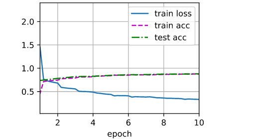
3 Q&A 3.1 Little Questions AlexNet的目的就是为了筛选特征，以供全连接层进行分类。虽然，神经网络早期是说在模拟人脑神经的运行方式，但其实就是扯淡，现在早不提那一套了。总之，深度学习的可解释性的确很差。 AlexNet后的两个4096的全连接层Dense，是非常厉害的模型，因为前面的卷积的特征抽的不够好不够深，去掉一个后效果会差很多。 那帮搞深度学习的，最厉害的不是调参，最厉害的是包装！是宣传！所以，不要沉迷技术！对研究者来说，怎么宣传这一块的能力非常重要，不一定是产品有多厉害！ 比如：深度卷积网络这一词中的Deep，本身效果没有提升多少，但是被包装成划时代的提升，看看苹果的每年发布会。【万物转营销：技术都是要落地的】在实际使用模型时，输入可能是不规则的，不一定是224×224。一般的做法是将短边补齐到224，然后在其中抽样方形样本 八、使用块的网络 VGG 1 VGG AlexNet 说是变大的 LeNet，但变大的很随意。VGG是把AlexNet做的更深更大，更规则！
VGG【Visual Geometry Group】的思路就是，将卷积层整合成块 ，再不断拼接。
值得一提，VGG是2013年imageNet的冠军。
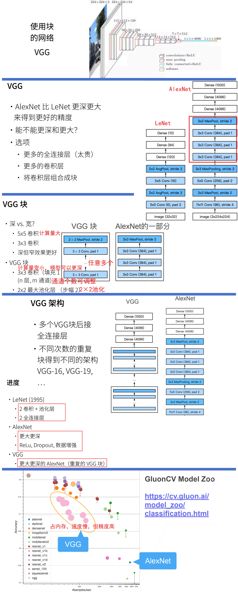
总结
VGG 使用可重复使用的卷积块来构建深度卷积神经网络 不同的卷积块个数和超参数可以得到不同复杂度的变种 2 代码实现 VGG块
1 2 3 4 5 6 7 8 9 10 11 12 13 import torchfrom torch import nnfrom d2l import torch as d2ldef vgg_block (num_convs, in_channels, out_channels ): layers = [] for _ in range(num_convs): layers.append( nn.Conv2d(in_channels, out_channels, kernel_size=3 , padding=1 )) layers.append(nn.ReLU()) in_channels = out_channels layers.append(nn.MaxPool2d(kernel_size=2 , stride=2 )) return nn.Sequential(*layers)
VGG网络
1 2 3 4 5 6 7 8 9 10 11 12 13 14 15 16 conv_arch = ((1 , 64 ), (1 , 128 ), (2 , 256 ), (2 , 512 ), (2 , 512 )) def vgg (conv_arch ): conv_blks = [] in_channels = 1 for (num_convs, out_channels) in conv_arch: conv_blks.append(vgg_block(num_convs, in_channels, out_channels)) in_channels = out_channels return nn.Sequential(*conv_blks, nn.Flatten(), nn.Linear(out_channels * 7 * 7 , 4096 ), nn.ReLU(), nn.Dropout(0.5 ), nn.Linear(4096 , 4096 ), nn.ReLU(), nn.Dropout(0.5 ), nn.Linear(4096 , 10 )) net = vgg(conv_arch)
观察每个层输出的形状
1 2 3 4 5 6 7 8 9 10 11 12 13 14 15 16 17 18 19 20 X = torch.randn(size=(1 , 1 , 224 , 224 )) for blk in net: X = blk(X) print(blk.__class__.__name__, 'output shape:\t' , X.shape) Out: Sequential output shape: torch.Size([1 , 64 , 112 , 112 ]) Sequential output shape: torch.Size([1 , 128 , 56 , 56 ]) Sequential output shape: torch.Size([1 , 256 , 28 , 28 ]) Sequential output shape: torch.Size([1 , 512 , 14 , 14 ]) Sequential output shape: torch.Size([1 , 512 , 7 , 7 ]) Flatten output shape: torch.Size([1 , 25088 ]) Linear output shape: torch.Size([1 , 4096 ]) ReLU output shape: torch.Size([1 , 4096 ]) Dropout output shape: torch.Size([1 , 4096 ]) Linear output shape: torch.Size([1 , 4096 ]) ReLU output shape: torch.Size([1 , 4096 ]) Dropout output shape: torch.Size([1 , 4096 ]) Linear output shape: torch.Size([1 , 10 ])
由于VGG-11比AlexNet计算量更大，因此我们构建了一个通道数较少的网络
1 2 3 ratio = 4 small_conv_arch = [(pair[0 ], pair[1 ] // ratio) for pair in conv_arch] net = vgg(small_conv_arch)
模型训练
1 2 3 4 5 6 7 lr, num_epochs, batch_size = 0.05 , 10 , 128 train_iter, test_iter = d2l.load_data_fashion_mnist(batch_size, resize=224 ) d2l.train_ch6(net, train_iter, test_iter, num_epochs, lr, d2l.try_gpu()) Out: loss 0.178 , train acc 0.936 , test acc 0.922 2538.3 examples/sec on cuda:0
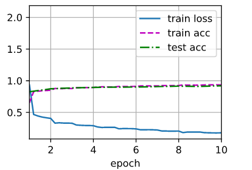
用的是比VGG最小模型VGG11【8卷积+3全连接】还小的模型【通道除以4，计算量减少16倍】，比AlexNet慢一倍，所以VGG的确很贵，但精度提升很大
九、网络中的网络 NiN 1 NiN NiN【 Network In Network】，网络中的网络，现在用的不多，几乎很少用，但提出了很重要的概念。
NiN 基于 AlexNet，并认为上面两个模型的全连接层占用了大量参数，不是很好
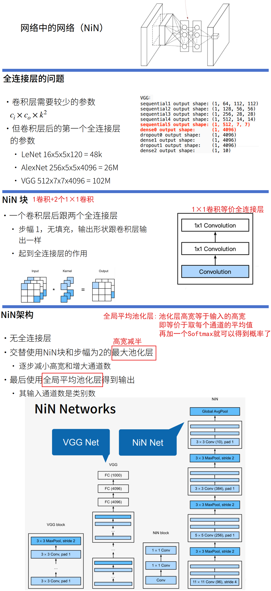
总结
NiN 块使用卷积层加两个1×1卷积层，后者对每个像素增加了非线性性 NiN 使用全局平局池化层来代替 VGG 和 AlexNet 中的全连接层，【比较狠的做法】这样不容易拟合，更少的参数个数 2 代码实现 NiN块
1 2 3 4 5 6 7 8 9 10 import torchfrom torch import nnfrom d2l import torch as d2ldef nin_block (in_channels, out_channels, kernel_size, strides, padding ): return nn.Sequential( nn.Conv2d(in_channels, out_channels, kernel_size, strides, padding), nn.ReLU(), nn.Conv2d(out_channels, out_channels, kernel_size=1 ), nn.ReLU(), nn.Conv2d(out_channels, out_channels, kernel_size=1 ), nn.ReLU())
NiN模型
1 2 3 4 5 6 7 8 9 10 11 net = nn.Sequential( nin_block(1 , 96 , kernel_size=11 , strides=4 , padding=0 ), nn.MaxPool2d(3 , stride=2 ), nin_block(96 , 256 , kernel_size=5 , strides=1 , padding=2 ), nn.MaxPool2d(3 , stride=2 ), nin_block(256 , 384 , kernel_size=3 , strides=1 , padding=1 ), nn.MaxPool2d(3 , stride=2 ), nn.Dropout(0.5 ), nin_block(384 , 10 , kernel_size=3 , strides=1 , padding=1 ), nn.AdaptiveAvgPool2d((1 , 1 )), nn.Flatten())
查看每个块的输出形状
1 2 3 4 5 6 7 8 9 10 11 12 13 14 15 16 X = torch.rand(size=(1 , 1 , 224 , 224 )) for layer in net: X = layer(X) print(layer.__class__.__name__, 'output shape:\t' , X.shape) Out: Sequential output shape: torch.Size([1 , 96 , 54 , 54 ]) MaxPool2d output shape: torch.Size([1 , 96 , 26 , 26 ]) Sequential output shape: torch.Size([1 , 256 , 26 , 26 ]) MaxPool2d output shape: torch.Size([1 , 256 , 12 , 12 ]) Sequential output shape: torch.Size([1 , 384 , 12 , 12 ]) MaxPool2d output shape: torch.Size([1 , 384 , 5 , 5 ]) Dropout output shape: torch.Size([1 , 384 , 5 , 5 ]) Sequential output shape: torch.Size([1 , 10 , 5 , 5 ]) AdaptiveAvgPool2d output shape: torch.Size([1 , 10 , 1 , 1 ]) Flatten output shape: torch.Size([1 , 10 ])
训练模型
1 2 3 4 5 6 7 lr, num_epochs, batch_size = 0.1 , 10 , 128 train_iter, test_iter = d2l.load_data_fashion_mnist(batch_size, resize=224 ) d2l.train_ch6(net, train_iter, test_iter, num_epochs, lr, d2l.try_gpu()) Out: loss 0.331 , train acc 0.878 , test acc 0.878 3182.2 examples/sec on cuda:0
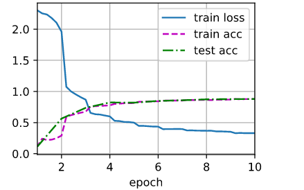
精度不算高，训练速度也没有高【可能是数据集较小，实际在 imageNet 上会比 AlexNet 好一些】
3 Q&A 3.1 Little Questions 网络结构里没有 Softmax 是因为写在了训练函数中
全局平均池化层的设计思想，给之后网络的设计带来很大影响。其可以把高宽直接压成1×1，计算变简单，最主要是会降低模型复杂度，提高模型泛化性，精度提高；坏处就是会使得后面的全连接层收敛变慢【相比LeNet 和 AlexNet 其后面的几层全连接层 fit 数据的能力太强了，所以收敛快】，但话说会来，收敛慢不是问题 ，只要精度高，一切都不是问题。
两个1×1的卷积层，对每个像素增加了非线性，如何理解？
1×1卷积层，相当于对每一个像素对应的那个通道向量，做一个全连接层。两个1×1的卷积层，相当于对每个像素的输入通道，做了一个两层隐含层的MLP，而MLP中间有一个ReLU函数。
十、含并行连接的网络 GoogLeNet 1 GoogLeNet 第一个超过100层的卷积神经网络【取名是为了致敬 LeNet，实际上与 LeNet 一点关系都没有】，这个模型也是受到 NiN 的启发
🔺【卷积层可学习的参数个数 】输入通道数 × 输出通道数 × Kernel大小
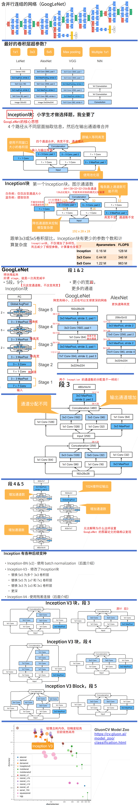
总结：
Inception 块有4条不同超参数的卷积层和池化层的分支来抽取不同信息【它的一个主要优点就是模型参数小，计算复杂度低】；GoogLeNet 使用了9个 Inception 块，是第一个达到上百层的神经网络【不是纯深100，直到ResNet出现才可以】，后续有进一步的改进，如V2，V3；GoogLeNet 虽然精度高，但不是特别受欢迎的一个原因就是太复杂。2 代码实现 Inception块
1 2 3 4 5 6 7 8 9 10 11 12 13 14 15 16 17 18 19 20 21 22 23 import torchfrom torch import nnfrom torch.nn import functional as Ffrom d2l import torch as d2lclass Inception (nn.Module ): def __init__ (self, in_channels, c1, c2, c3, c4, **kwargs ): super(Inception, self).__init__(**kwargs) self.p1_1 = nn.Conv2d(in_channels, c1, kernel_size=1 ) self.p2_1 = nn.Conv2d(in_channels, c2[0 ], kernel_size=1 ) self.p2_2 = nn.Conv2d(c2[0 ], c2[1 ], kernel_size=3 , padding=1 ) self.p3_1 = nn.Conv2d(in_channels, c3[0 ], kernel_size=1 ) self.p3_2 = nn.Conv2d(c3[0 ], c3[1 ], kernel_size=5 , padding=2 ) self.p4_1 = nn.MaxPool2d(kernel_size=3 , stride=1 , padding=1 ) self.p4_2 = nn.Conv2d(in_channels, c4, kernel_size=1 ) def forward (self, x ): p1 = F.relu(self.p1_1(x)) p2 = F.relu(self.p2_2(F.relu(self.p2_1(x)))) p3 = F.relu(self.p3_2(F.relu(self.p3_1(x)))) p4 = F.relu(self.p4_2(self.p4_1(x))) return torch.cat((p1, p2, p3, p4), dim=1 )
GoogLeNet模型
1 2 3 4 5 6 7 8 9 10 11 12 13 14 15 16 17 18 19 20 21 22 23 24 b1 = nn.Sequential(nn.Conv2d(1 , 64 , kernel_size=7 , stride=2 , padding=3 ), nn.ReLU(), nn.MaxPool2d(kernel_size=3 , stride=2 , padding=1 )) b2 = nn.Sequential(nn.Conv2d(64 , 64 , kernel_size=1 ), nn.ReLU(), nn.Conv2d(64 , 192 , kernel_size=3 , padding=1 ), nn.MaxPool2d(kernel_size=3 , stride=2 , padding=1 )) b3 = nn.Sequential(Inception(192 , 64 , (96 , 128 ), (16 , 32 ), 32 ), Inception(256 , 128 , (128 , 192 ), (32 , 96 ), 64 ), nn.MaxPool2d(kernel_size=3 , stride=2 , padding=1 )) b4 = nn.Sequential(Inception(480 , 192 , (96 , 208 ), (16 , 48 ), 64 ), Inception(512 , 160 , (112 , 224 ), (24 , 64 ), 64 ), Inception(512 , 128 , (128 , 256 ), (24 , 64 ), 64 ), Inception(512 , 112 , (144 , 288 ), (32 , 64 ), 64 ), Inception(528 , 256 , (160 , 320 ), (32 , 128 ), 128 ), nn.MaxPool2d(kernel_size=3 , stride=2 , padding=1 )) b5 = nn.Sequential(Inception(832 , 256 , (160 , 320 ), (32 , 128 ), 128 ), Inception(832 , 384 , (192 , 384 ), (48 , 128 ), 128 ), nn.AdaptiveAvgPool2d((1 , 1 )), nn.Flatten()) net = nn.Sequential(b1, b2, b3, b4, b5, nn.Linear(1024 , 10 ))
为了使Fashion-MNIST上的训练短小精悍，我们将输入的高和宽从224降到96
1 2 3 4 5 6 7 8 9 10 11 12 13 X = torch.rand(size=(1 , 1 , 96 , 96 )) for layer in net: X = layer(X) print(layer.__class__.__name__, 'output shape:\t' , X.shape) Out: Sequential output shape: torch.Size([1 , 64 , 24 , 24 ]) Sequential output shape: torch.Size([1 , 192 , 12 , 12 ]) Sequential output shape: torch.Size([1 , 480 , 6 , 6 ]) Sequential output shape: torch.Size([1 , 832 , 3 , 3 ]) Sequential output shape: torch.Size([1 , 1024 ]) Linear output shape: torch.Size([1 , 10 ])
训练模型
1 2 3 4 5 6 7 lr, num_epochs, batch_size = 0.1 , 10 , 128 train_iter, test_iter = d2l.load_data_fashion_mnist(batch_size, resize=96 ) d2l.train_ch6(net, train_iter, test_iter, num_epochs, lr, d2l.try_gpu()) Out: loss 0.240 , train acc 0.909 , test acc 0.899 3403.7 examples/sec on cuda:0
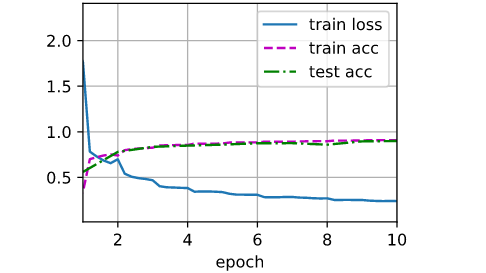
3 Q&A 3.1 Little Questions 3×3卷积核、1×1卷积核都能降通道且保持高宽不变，但选择1×1卷积核的原因是：1×1卷积核计算量小； 3×3卷积改成两个3×1、1×3的好处是可以降低计算量； 相比之前的 LeNet 和 AlexNet ，GoogLeNet 的设计和之后网络的设计都更加精巧，不是直接加全连接层直接分类。当卷积层越来越深，通道数越来越多，可识别的模式越来越多，但一般1024、2048就差不多了【基于imageNet】，否则容易过拟合； 训练过程中的 tricks 很重要，可以在不改变模型复杂度的情况下，提高模型精度。 十一、批量归一化 1 批量归一化 批量归一化的思想，就目前来说不太行；但批量归一化层【2016年才出现的概念】，或多活动少得用在目前主流的卷积神经网络中，特别是做特别深的网络时，该层也是很必要的。
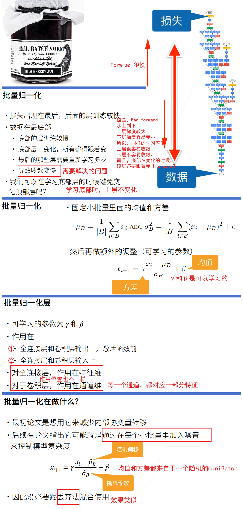
总结
批量归一化固定小批量中的均值和方差，然后学习出适合的偏移和缩放 可加速收敛速度，但一般不改变模型精度 【允许使用更大的学习率】 2 代码实现 从零实现
1 2 3 4 5 6 7 8 9 10 11 12 13 14 15 16 17 18 19 20 21 22 23 24 25 26 import torchfrom torch import nnfrom d2l import torch as d2ldef batch_norm (X, gamma, beta, moving_mean, moving_var, eps, momentum ): if not torch.is_grad_enabled(): X_hat = (X - moving_mean) / torch.sqrt(moving_var + eps) else : assert len(X.shape) in (2 , 4 ) if len(X.shape) == 2 : mean = X.mean(dim=0 ) var = ((X - mean)**2 ).mean(dim=0 ) else : mean = X.mean(dim=(0 , 2 , 3 ), keepdim=True ) var = ((X - mean)**2 ).mean(dim=(0 , 2 , 3 ), keepdim=True ) X_hat = (X - mean) / torch.sqrt(var + eps) moving_mean = momentum * moving_mean + (1.0 - momentum) * mean moving_var = momentum * moving_var + (1.0 - momentum) * var Y = gamma * X_hat + beta return Y, moving_mean.data, moving_var.data
创建一个正确的 BatchNorm 图层
1 2 3 4 5 6 7 8 9 10 11 12 13 14 15 16 17 18 19 20 21 22 23 24 25 class BatchNorm (nn.Module ): def __init__ (self, num_features, num_dims ): super().__init__() if num_dims == 2 : shape = (1 , num_features) else : shape = (1 , num_features, 1 , 1 ) self.gamma = nn.Parameter(torch.ones(shape)) self.beta = nn.Parameter(torch.zeros(shape)) self.moving_mean = torch.zeros(shape) self.moving_var = torch.ones(shape) def forward (self, X ): if self.moving_mean.device != X.device: self.moving_mean = self.moving_mean.to(X.device) self.moving_var = self.moving_var.to(X.device) Y, self.moving_mean, self.moving_var = batch_norm( X, self.gamma, self.beta, self.moving_mean, self.moving_var, eps=1e-5 , momentum=0.9 ) return Y
应用BatchNorm 于LeNet模型
1 2 3 4 5 6 7 8 net = nn.Sequential(nn.Conv2d(1 , 6 , kernel_size=5 ), BatchNorm(6 , num_dims=4 ), nn.Sigmoid(), nn.MaxPool2d(kernel_size=2 , stride=2 ), nn.Conv2d(6 , 16 , kernel_size=5 ), BatchNorm(16 , num_dims=4 ), nn.Sigmoid(), nn.MaxPool2d(kernel_size=2 , stride=2 ), nn.Flatten(), nn.Linear(16 * 4 * 4 , 120 ), BatchNorm(120 , num_dims=2 ), nn.Sigmoid(), nn.Linear(120 , 84 ), BatchNorm(84 , num_dims=2 ), nn.Sigmoid(), nn.Linear(84 , 10 ))
在Fashion-MNIST数据集上训练网络
1 2 3 4 5 6 7 lr, num_epochs, batch_size = 1.0 , 10 , 256 train_iter, test_iter = d2l.load_data_fashion_mnist(batch_size) d2l.train_ch6(net, train_iter, test_iter, num_epochs, lr, d2l.try_gpu()) Out: loss 0.246 , train acc 0.910 , test acc 0.887 35771.8 examples/sec on cuda:0
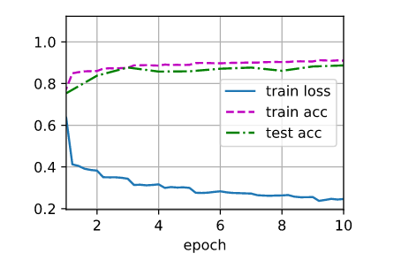
拉伸参数 gamma 和偏移参数 beta
1 2 3 4 5 6 7 net[1 ].gamma.reshape((-1 ,)), net[1 ].beta.reshape((-1 ,)) Out: (tensor([2.1534 , 2.1612 , 2.0096 , 1.9473 , 1.8451 , 1.3328 ], device='cuda:0' , grad_fn=<ViewBackward>), tensor([ 0.0310 , -2.4748 , 0.5816 , 0.5764 , -1.6917 , -0.6970 ], device='cuda:0' , grad_fn=<ViewBackward>))
简明实现
1 2 3 4 5 6 7 net = nn.Sequential(nn.Conv2d(1 , 6 , kernel_size=5 ), nn.BatchNorm2d(6 ), nn.Sigmoid(), nn.MaxPool2d(kernel_size=2 , stride=2 ), nn.Conv2d(6 , 16 , kernel_size=5 ), nn.BatchNorm2d(16 ), nn.Sigmoid(), nn.MaxPool2d(kernel_size=2 , stride=2 ), nn.Flatten(), nn.Linear(256 , 120 ), nn.BatchNorm1d(120 ), nn.Sigmoid(), nn.Linear(120 , 84 ), nn.BatchNorm1d(84 ), nn.Sigmoid(), nn.Linear(84 , 10 ))
使用相同超参数来训练模型
1 2 3 4 5 d2l.train_ch6(net, train_iter, test_iter, num_epochs, lr, d2l.try_gpu()) Out: loss 0.245 , train acc 0.909 , test acc 0.843 63402.8 examples/sec on cuda:0
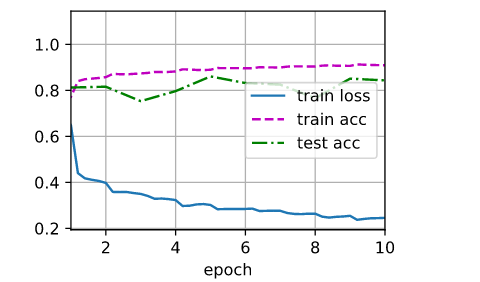
3 Q&A 3.1 Little Questions Batch-Normalization 的思路类似用 Xvier 时候的 Normalization，都是让模型稳定，这样收敛就不会变慢 【BN对数据做，XVier对初始化做】【归一化Normalization就是均值为0方差为1；加入一些防止梯度爆炸和消失的项，叫做正则项Reguarizatoin】
BN对较深的神经网络的效果很明显，对mlp等浅层的效果可能不明显；
BN是做了一个线性变换，这与加一个线性层有什么区别呢？
线性层不一定会学到你要的东西。对线性层来说，不需要做方差变1均值变0，但不做，很有可能数值不稳定，因而得不到好的值域里的参数
BN使得收敛变快的原因？
BN使得每一层的梯度差距不会过大，这样可以使用更大的学习率，使得权重更新变快
先根据内存大小调 batch_size【要么GPU利用率90%左右，要么更常用的是，调整batch_size，使得GPU每秒处理数趋于稳定即可】，再调学习率和epoch数【可中途停止】
十二、残差网络（ResNet） 1 ResNet ReNet【2015】，源于一个思想：不断加深神经网络，但加深不一定会提高模型精度。所以，ReNet 的核心思想是保证：大模型的效果不会比小模型的效果差！
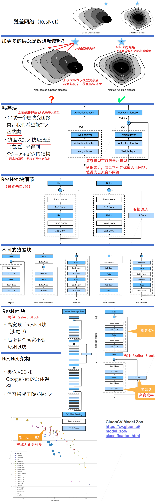
总结
残差块使得很深的网络更加容易训练，甚至可以训练一千层的网络【ReNet连接的存在，使得永远可以包含小网络】 残差网络对随后的深层神经网络设计产生了深远的影响，无论是卷积类网络，还是全连接类网络 2 代码实现 残差块
1 2 3 4 5 6 7 8 9 10 11 12 13 14 15 16 17 18 19 20 21 22 23 24 25 26 27 28 29 30 import torchfrom torch import nnfrom torch.nn import functional as Ffrom d2l import torch as d2lclass Residual (nn.Module ): def __init__ (self, input_channels, num_channels, use_1x1conv=False, strides=1 ): super().__init__() self.conv1 = nn.Conv2d(input_channels, num_channels, kernel_size=3 , padding=1 , stride=strides) self.conv2 = nn.Conv2d(num_channels, num_channels, kernel_size=3 , padding=1 ) if use_1x1conv: self.conv3 = nn.Conv2d(input_channels, num_channels, kernel_size=1 , stride=strides) else : self.conv3 = None self.bn1 = nn.BatchNorm2d(num_channels) self.bn2 = nn.BatchNorm2d(num_channels) self.relu = nn.ReLU(inplace=True ) def forward (self, X ): Y = F.relu(self.bn1(self.conv1(X))) Y = self.bn2(self.conv2(Y)) if self.conv3: X = self.conv3(X) Y += X return F.relu(Y)
输入和输出形状一致
1 2 3 4 5 6 7 blk = Residual(3 , 3 ) X = torch.rand(4 , 3 , 6 , 6 ) Y = blk(X) Y.shape Out: torch.Size([4 , 3 , 6 , 6 ])
增加输出通道数的同时，减半输出的高和宽
1 2 3 4 5 blk = Residual(3 , 6 , use_1x1conv=True , strides=2 ) blk(X).shape Out: torch.Size([4 , 6 , 3 , 3 ])
ResNet模型
1 2 3 4 5 6 7 8 9 10 11 12 13 14 15 16 17 18 19 20 21 22 23 24 25 b1 = nn.Sequential(nn.Conv2d(1 , 64 , kernel_size=7 , stride=2 , padding=3 ), nn.BatchNorm2d(64 ), nn.ReLU(), nn.MaxPool2d(kernel_size=3 , stride=2 , padding=1 )) def resnet_block (input_channels, num_channels, num_residuals, first_block=False ): blk = [] for i in range(num_residuals): if i == 0 and not first_block: blk.append( Residual(input_channels, num_channels, use_1x1conv=True , strides=2 )) else : blk.append(Residual(num_channels, num_channels)) return blk b2 = nn.Sequential(*resnet_block(64 , 64 , 2 , first_block=True )) b3 = nn.Sequential(*resnet_block(64 , 128 , 2 )) b4 = nn.Sequential(*resnet_block(128 , 256 , 2 )) b5 = nn.Sequential(*resnet_block(256 , 512 , 2 )) net = nn.Sequential(b1, b2, b3, b4, b5, nn.AdaptiveAvgPool2d((1 , 1 )), nn.Flatten(), nn.Linear(512 , 10 ))
观察一下ResNet中不同模块的输入形状是如何变化的
1 2 3 4 5 6 7 8 9 10 11 12 13 14 X = torch.rand(size=(1 , 1 , 224 , 224 )) for layer in net: X = layer(X) print(layer.__class__.__name__, 'output shape:\t' , X.shape) Out: Sequential output shape: torch.Size([1 , 64 , 56 , 56 ]) Sequential output shape: torch.Size([1 , 64 , 56 , 56 ]) Sequential output shape: torch.Size([1 , 128 , 28 , 28 ]) Sequential output shape: torch.Size([1 , 256 , 14 , 14 ]) Sequential output shape: torch.Size([1 , 512 , 7 , 7 ]) AdaptiveAvgPool2d output shape: torch.Size([1 , 512 , 1 , 1 ]) Flatten output shape: torch.Size([1 , 512 ]) Linear output shape: torch.Size([1 , 10 ])
训练模型
1 2 3 4 5 6 7 lr, num_epochs, batch_size = 0.05 , 10 , 256 train_iter, test_iter = d2l.load_data_fashion_mnist(batch_size, resize=96 ) d2l.train_ch6(net, train_iter, test_iter, num_epochs, lr, d2l.try_gpu()) Out: loss 0.023 , train acc 0.993 , test acc 0.912 4687.2 examples/sec on cuda:0
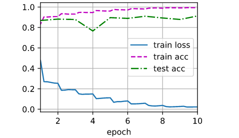
ReNet 的确是很强的模型，即使overfitting接近1，测试精度都能到0.88
3 Q&A 3.1 Little Questions batch_size > 1000 可能会导致收敛变慢且精度下降，主要是因为batch过大，一个batch中的样本相似度很高，多样性下降。
对于 f(x) = x + g(x)，如何理解当 g(x) 是更坏的模型，f (x) 依然保持原来小模型？
如果对于训练出来的 g(x) 更坏，做梯度反传【Back Forward】的时候拿不到任何梯度，所以 g(x) 的权重不会被更新，所以其权重很可能就是一些很小随机的值，贡献很小，梯度甚至为0，然后其权值趋于很小。所以，ResNet 会使得模型变深时，模型效果不会变差。
cos学习率挺好的，现在用的是固定学习率，现在还有阶梯式的学习率。
测试精度acc 是有可能大于训练acc的。比如，你在训练集中加入大量噪声。
残差 【Residual】：举个例子，对于f(x) = x + g(x)，先去训练使得 fitting x 的这个小模型，当这个小模型训练的差不多了，再去 fitting g(x)【残差 | Residual】，使得越来越逼近真实模型。【类似于牛顿法，不断逼近】【对于ResNet-152，它也是先训练好 ResNet-18，再不断去迭代残差 g(x)】
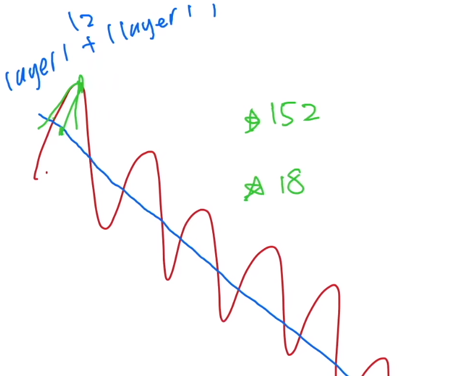
4 ResNet 为什么能训练出1000层的模型？ 深层网络最大的障碍就是梯度消失和爆炸，之前讲过一个办法就是避免梯度消失，即乘法变加法，其实ResNet 就是这么做的，特别是 Residual connection。
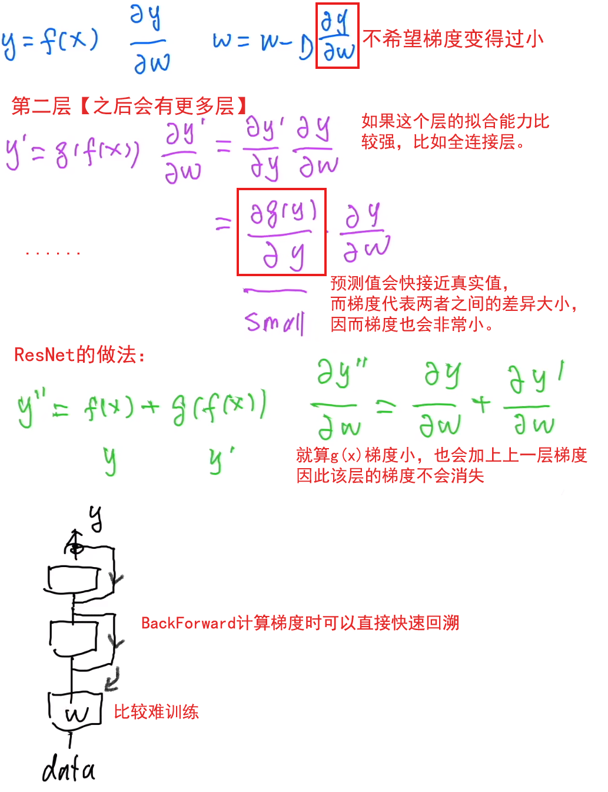
十三、竞赛：图片分类
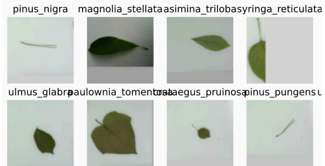
竞赛地址Addr